Table of Contents
Предисловие
У каждого времени и у временного периода в истории земного шара было своё представление о мире. Вплоть до половины XIX века основания этого представления покоились на теории катастрофы, в соответствии с которой в прошлом однажды произошло огромное бедствие. О том как это произошло можно прочитать в Библии, а также в сохранившихся мифах и легендах, собранных среди более 90 народов.
Теория катастрофы дала правителям и священству орудие управления и ограничения не только мышления, но и социального развития. В условиях преобладающего библейского представления происходящего было естественным, что правители и священство являлись хранителями этих традиций и поэтому на них даже политически нельзя было нападать.
Принятая современной наукой теория эволюции первоначально была заказной и создавалась она для того, чтобы противостоять библейскому представлению о мире. В Англии в начале 1800 годов сформировалась группа состоящая из представителей парламента и одного адвоката, которая хотела сломить власть короля. Группа размышляла о том, что если теория потопа не верна, а может также не верны и другие библейские истории. Заявление об этом сделало бы возможным смещение власти.
Один из членов этой группы, геолог Чарльз Лайель, издал в 1830 году книгу «Основные начала геологии» (”Principles of Geology”), в которой искусно уверяет, что рассказ о потопе является мифологическим преданием. По его мнению, эрозию и вулканическую деятельность можно объяснить геологическими формами поверхности Земли, произошедших за много миллионов лет.
Работу Лайеля дополнил Чарльз Дарвин, который опубликовал в 1859 году свой научный труд под названием «Происхождение видов». Так же как и у Лайеля, растягивание миллионов лет дало Дарвину возможность разместить развитие животного мира и человечества на тех удивительных временных этапах. Объединённая система мышления Лайеля и Дарвина дала политикам долгожданное орудие против священства и короля. Эти мысли всё больше и больше стали получать поддержку и теперь спустя уже 100 лет из этого представления сформировался фундамент современной науки, против которого не проводится никаких диспутов.
Наука, тем не менее, за это столетие сделала гиганский скачок вперёд. Каждый новый день приносит новые и ошеломляющие результаты, которые не соответствуют парадигме Лайеля и Дарвина. Тем не менее, мы не можем с уверенностью сказать, что Лайель и Дарвин являются абсолютно не правыми. Их отрицательное влияние привело к тому, что у современных учёных и политиков есть выбор либо эволюция либо катастрофа, но всё ещё не видно возможностей для каких-либо уступок, как в одном направлении так и в другом. И хотя каждый день появляются всё новые свидетельства против Лайеля и Дарвина, их либо покрывают тишиной, либо ограничиваются пожиманием плечей.
Правда в том, что история земного шара содержит в себе бесчисленные нераскрытые загадки. Друг за другом появляются необъяснимые находки из недр земли или из старинных записей. Все они являются свидетелями, но не спокойного и равномерного развития протяжённостью в миллионы лет, как полагают учёные.
Последние 15 лет жизни я посвятил решению этих загадок. Мало помалу мой портфель становился всё более тяжёлым от собранных сведений. Теперь пришло время открыть этот сундук. Каждый сам может взвесить при помощи этой книги вес этих свидетельств.
Я всегда восхищался такими исследователями как Тур Хейердал, которые заостряют своё внимание на обнаруженных ими проблемах и самостоятельно пытаются найти ответы для их решения, не прибегая к уже опубликованным в книгах. Хейердал уверял, что народы заселившие Полинезию являются выходцами из Южной Америки, в которой можно найти такие же особенности культуры как и в Полинезии. Он подтвердил свою гипотезу проплыв на первобытном плату из Южной Америки в Полинезию.
Кроме морского путешествия, Хейердал подтвердил также легенду инков о «длинноухих». Они заселили территорию острова Пасхи первыми и жили среди других жителей как знать, являясь хранителями знаний и умений. Из поколения в поколение они растягивали себе уши для выделения себя перед другими согражданнами. В конце концов «длинноухих» стало так много, что они стали непосильной задачей содержания их гражданами. Произошло восстание и, в следствии чего, «длинноухие» были уничтожены.
Существует ли сегодня класс «длинноухих», который мы содержим? Если докторскую шляпу считать знаком отличия, как это было у правящего класса инков — длинные уши, то соответствие найдётся. Современные учёные забаррикадировались в своей башне из слоновой кости и их задачей является учить новых «длинноухих». Они являются руководителями своей школы, которая не признает смелых исследователей и не пытается выяснить возрастающий интерес к прошлому человечества.
В этой связи хочу поблагодарить Спеде Пасанена, который был заинтресован моими идеями и даже планировал телевизионную передачу с моим участием. Не сомневаюсь, что когда-нибудь потом, мы сможем увидеть по нашему телевизору такую передачу и её, по просьбе геологического отдела исследований и из-за тогдашнего руководства МТВ, не запретят.
Хочу также поблагодарить бесчисленное число людей, которые из года в год поддерживали меня в моих достижениях, спонсировали и не жалея своего времени были моими помощниками, порой в тяжёлых исследовательских работах. Без их участия не было бы и половины этой книги.
На протяжении многих лет опубликованные в разных газетах статьи о моих взглядах пробуждали живой обмен мнениями. К сожалению, из-за недостатка места в печатных газетах, я не мог выразить всю картину своего взгляда, поэтому, до этого момента, обсуждение вокруг этой темы велось в незначительных размерах. Надеюсь, что эта книга способна исправить это положение и оправдает свои цели.
Г. Турку, Финляндия, август 1984 года
Кейо Парккунен
Специалист в области естествоведения
1. Лёд, лёд и лёд
Говоря о ледниковой теории, ученые акцентируют внимание на огромное количество льда, которое существовало сотни тысяч лет. В соответствии с их теорией оледенение началось 500 000 лет назад и завершилось примерно 10 000 лет назад. Между ледниковыми эпохами был некоторый долгий и тёплый промежуточный период, на протяжении которого льда не было. Самое обширное распространение ледникового щита занимало площадь свыше 40 млн. км². Толщина льда превышала три километра.
Земной шар получает тепло от одного и того же Cолнца на протяжении многих лет и зим. Сегодня известно, что за последние десятки тысяч лет полярные области земли смещались, но не было очень сильных колебаний оси, которые могли бы привести к серьёзным изменениям климата. Мы можем также считать, что Cолнце отдавало тепло нашей планете примерно одинаково, как в прежние времена, так и сегодня. Интересно, что учёные до сих пор не пытались объяснить причин климатических нарушений. Им просто было достаточно изъясниться стандартным клише: «когда ледник начал таять…» или «когда ледниковый период начался…». А почему так произошло?
Принимая во внимание нынешние климатические условия, возникновение ледникового периода и его исчезновение представляются невозможными, так как для его образования было бы необходимо колоссальное нарушение климата. Воздух надо было бы остужать так долго, чтобы лёд, собранный в зимнее время, не успел бы растаять за летний тёплый промежуток времени. В таком случае воздействие солнечной энергии надо было бы свести на «нет» и обдувать поверхность Земли продолжительными холодными воздушными потоками. С другой стороны земного шара надо было бы так вскипятить воду, чтобы в воздух испарилось огромное количество воды, из которой можно было бы сформировать лёд.
При подъёме вверх, температура воздуха снижается от поверхности земли на 5-8˚С на 1 км. Например, в г. Рованиеми (Rovaniemi), расположенного на 66°30’ с. ш., средняя температура самого тёплого месяца года — июля, составляет +15˚С. Если в этой точке подняться на трёхкилометровую высоту, которая соответствует толщине ледникового покрова в период оледенения, тогда температура воздуха будет ниже нуля. На этой широте при данной высоте только несколько дней в году температура может достигать плюсовой отметки. Но даже неспециалист догадается, что за это время ледяная масса трёхкилометровой толщины не успела бы растаять, но увеличивалась бы всё больше и больше вплоть до наших дней, и мы могли бы наблюдать её и сейчас.
Ледниковой теории больше ста лет. За это время поверишь какой угодно так долго исследованной теории. Казалось бы, уже достаточно потрачено времени и денег на изучение этой темы, но у этой теории всё же отсутствуют доказательства. Гипотезы об оледенении Земли за десятилетия превратились в неоспоримые факты, в которые современные учёные слепо верят. Для подтверждения теории находятся разные объяснения: перемещения земной оси, пятна на Солнце и теория движения ледника. Всё же все эти объяснения остаются не чем иным, как верованиями.
В Лапландии льды реки Тенойоки (Tenojoki) обычно выбрасываются летом далеко на берег. Это явление знакомо местному населению. Люди часто сталкиваются в июльский зной с ещё нерастаявшими ледяными глыбами, и даже в августе там валяются большие куски льда. Это указывает на находящийся где-то в Лапландии ледник, который не успел растаять за короткое лапландское лето. Во время поиска таких мест я услышал о пещере, находящейся на одном из островов озера Инари (Inari). Пол этой пещеры, как утверждали, покрыт льдом.
Весной я, наконец-то, нашёл эту необычную пещеру. Она оказалась 20 – 30 м в длину и приблизительно 4 м в ширину. С внешней стороны пещеры были огромные каньоны, остров был как будто снизу-вверх выгнут. Он был разорван на сотни метров и выгнут вверх так, что треснувшие большие куски были сдвинуты друг на друга. Таким образом возникло пространство, из которого вода не могла вытечь наружу. На полу комнаты стелился почти трёхметровый лёд, который не тает даже летом.
Если лёд не успевает растаять на Инари за короткое летнее время, как же тогда растаял трёхкилометровый ледник?
Размышляя над этим, я решил провести эксперимент с таянием льда на сопке Пюхятунтури (Pyhätunturi). Из соседнего с сопкой озера можно нарезать куски льда и затем перетащить их на поверхность сопки. Растает ли лёд на сопке также, как и снег?
В марте 1981 года мы смогли начать проведение эксперимента. Из озера Вуостимоярви (Vuotsimojärvi) нарезали 70 м³ кусков льда, которые машины перетащили на сопку Пюхятунтури. Ледяная пирамида не осталась без внимания местных жителей и журналистов. Местная газета написала, что на сопке Пюхятунтури исследуют «грандиозные вещи».
Эксперимент на сопке Пюхятунтури был первым примером того, что в ледниковой теории можно сильно сомневаться. Что же подтвердили эти 70 м³ «сахара» на Лапландском пейзаже?
Весной, когда таял снег, таяние ледяной кучи длилось на два месяца дольше. В середине июня на поверхности сопки всё ещё был лёд. В июле лёд всё же растаял. Если ледник был в десятки раз больше, тогда он выдержал бы летний зной.
Учёные предполагают, что ледник начал таяние с территории Швеции. Некоторые осмеливаются и мягко спрашивают: почему же до сих пор снежный покров украшает «Шведские Альпы»? Когда горы достаточно высокие, ни снег, ни лёд больше не тают и на высоте 3 000 м сохраняются даже летом. Могла ли тогда масса льда в ледниковый период вообще растаять?
Сторонники ледниковой теории представляют, что ледник распространялся с севера-запада на юго-восток, об этом, как они говорят, повествуют царапины на скалах. У ледниковой массы трёхкилометровой толщины колоссальный вес. Как такая масса могла двигаться? В таком случае нужна была бы какая-то сила, способная толкать ледник. Откуда могла взяться сила, которая в состоянии двигать миллионнотонную массу по пересечённой местности?
Много раз пытались объяснить ледниковую теорию при помощи ледникового потока. Теорию движения ледника попробовали обосновать в Антарктиде, где при помощи подрыва хотели заставить ледник двигаться. Опыт закончился конфузом, т. к. лёд не сдвинулся даже на миллиметр. В любом случае ледники никогда не смогут двигатся вверх, заползая на горы и при этом передвигать еще огромные скалистые глыбы.
В прошлом столетии жил учёный Сер Генри Говарт (Sir Henry Howarth), который посчитал, сколько весили бы массы льда ледникового периода. По его мнению, ледяная масса была бы весом в 25 атмосфер. К примеру, вес нашей атмосферы составляет 5,1 · 10¹5 тонн. По мнению Говарта предположение, что камни возможно было поднять в сопротивлении к этому давлению, неверно. Ледник сам не мог поднять тяжёлые камни. Всё-таки существует огромное количество каменных глыб, которые, как считается, были перенесены во время оледенения.
Самыми значительными признаками деятельности древних ледников являются валуны, морена, моренные гряды из гравия и гладкие скалы. В возникновении их точно была задействована огромная сила, но могли ли они появиться благодаря воздействию льда?
В учебниках рассказывается о том, как с поверхности скалы был оторван семиметровый камень. Для того чтобы сделать валун круглым, с его поверхности надо убрать достаточно много лишнего материала. В сознание закрадывается сомнение, как лёд был способен шлифовывать и выстругивать, если он не способен двигаться?
Следы работы природы видны чуть ли не во всех уголках света. Даже в Африке на плоскогорье Южной Родезии находятся большие, пять метров в диаметре, каменные глыбы, которые двигались до этого места в северном направлении. По какой-то причине они остановились далеко в Африке. На этом континенте следы оледенения следуют с юга на север. Этому нет объяснения, только констатировано, что их необходимо объяснять разными способами.
Гладкие скалы считаются признаком ледникового периода и многие в это верят, потому что никакого другого объяснения не было дано. Но так как приходиться сомневаться в том, что ледник может двигатся, срезая и отшлифовывая на своем пути скалистый материал, то для образования такой гладкой поверхности скал безусловно понадобилась другая сила.
Учёные считают, что во время ледникового периода наряду с гладкими скалами появились еще и моренные гряды из гравия, такие как Салпаусселькя (Salpausselkä), Таммела (Tammela), Пююникки (Pyynikki) и огромные каменные россыпи. Даже у профессионала строителя не нашлось бы, что ответить, какого объёма была эта работа природы и сколько понадобилось бы на это энергии.
На реке Вуокса в отвесных стенах скал есть выбоины. Интересно, как они появились? Подтверждённым фактом является то, что уровень воды Финского залива когда-то был на одном уровне с озером Сайма, и они сообщались. В качестве напоминания о том времени на озере остался обитать сайменский тюлень. В какое же время вода создала пороги Вуоксы и её многочисленные выбоины? Если снижение уровня моря происходило на один сантиметр в год, то тогда получается, что на эту работу потребовалось огромное количество времени и тихое русло реки образовало эти глубокие выбоины. Что в принципе невозможно. Сегодня же скорость воды в русле почти 100 км/ч, как камень или камни могли остановиться у скольской и отвесной поверхности скалы и просверлить выбоины?
Огромные ледники Антарктиды часто используются в качестве доказательства ледниковой теории. Хотя в Антарктиде действительно находятся массивные ледники, этот факт всё же никак не объясняет возникновение оледенения, потому что оно могло быть даже в экваториальных странах.
Профессор истории и антропологии Чарльз Хатчинс Хэпгуд (C. H. Hapgood) выдвинул интересные сведения об Антарктиде в своей статье «Сдвиг земной коры» (Sunday Evening Postissa 10.1.1959), в которой он пишет о том, что радиоуглеродный метод снижает время ледникового периода с 30 000 до 10 000 лет. А благодаря ионному методу установлен возраст образцов осадочных пород основания моря Росса. Стало очевидным, что за последний миллион лет Антарктида была разморожена несколько раз… После датирования образцов бурения обнаружили, что самый ранний ледниковый период моря Росса начался 6 000 лет назад. Это наблюдение о том, что ледниковый период моря Антарктиды начался только 6 000 лет назад, является, по-настоящему, бомбой. На континенте найдены фруктовые и пальмовые деревья также, как и в Гренландии и в Сибири, а также предполагается наличие нефти и каменного угля.
В 1956 году на Антарктиде были произведены международные исследования, результатом которых стала книга, в которой можно прочитать много интересного. Например, о том, как на Антарктиде прокопали 200 метров вглубь и подтвердили, что попали в начало отсчёта нашей эры, потому что накопления снега составляли 10 см в год.
Возможно ли лёд прокопать лопатой? Конечно же, нет. Антарктида не является ледником, но сформирована из рыхлого снежного льда. Это подтверждается одним интересным случаем. Для работы на Антарктиде самолёт доставлял снегоуборочные трактора. Приземлится на снег самолёт не мог, поэтому он сбросил необходимые для снабжения трактора на парашютах. Один парашют не раскрылся, и трактор упал прямо вниз на поверхность ледника. Если ли бы речь шла о твёрдом льде, то тогда бы машина разбилась. Но трактор погрузился на 11-ти метровую глубину. Подводя итог, хочу отметить, что ледники Антарктиды не являются доказательством ледниковой теории, т. к. ледники Антарктиды и древние ледники состоят из разных структур одного вещества.
За неверным летоисчислением учёные скрывают свои ошибочные утверждения ледниковой теории, чтобы человечество было снова готово платить за новые исследования. Они запугивают нас грядущими ледниковыми периодами, хотя не в состоянии представить доказательства предшествующих.
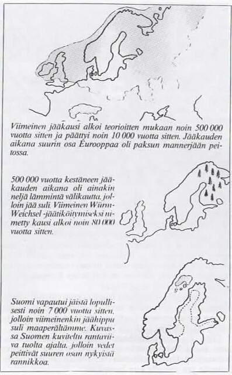
Согласно теориям, последний ледниковый период начался около 500 000 лет назад и закончился около 10 000 лет назад. Во время ледникового периода большая часть Европы была покрыта толстым континентальным льдом.
Во время ледникового периода, длившегося 500 000 лет, было как минимум четыре тёплых промежуточных периода, во время которых лёд таял. Последний период получивший название Вюрм-Вайхзельского оледенения, начался около 80 000 лет назад.
Финляндия окончательно освободилась ото льда около 7 000 лет назад, тогда, когда на нашей земле растаяла последняя сосулька. На рисунке изображена воображаемая береговая линия Финляндии того времени, т. к. в то время воды покрывали большую часть нынешнего побережья.
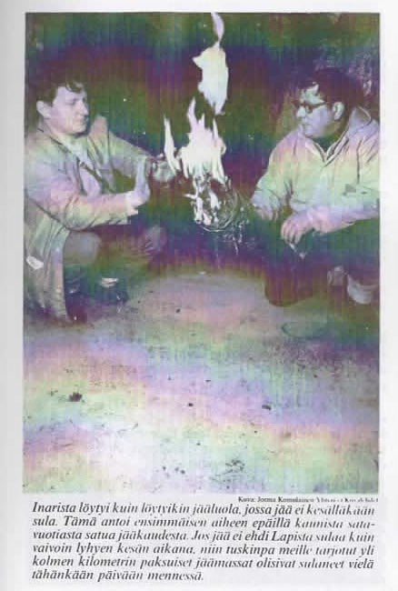
Фотография Йормы Комулайнена.
На Инари обнаружена ледяная пещера, где лёд не тает даже летом. Это дало первый повод усомниться в красивой столетней сказке о ледниковом периоде. Если за короткое лето лёд в Лапландии почти не тает, то вряд ли предложенные нам трёхкилометровые ледяные массы растаяли бы даже до сегоднящнего дня.
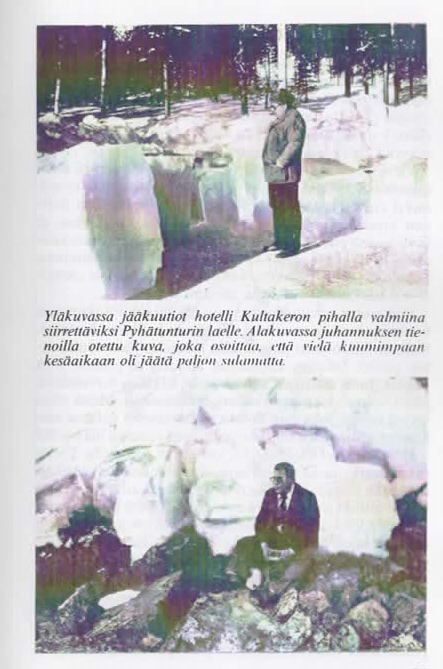
На верхнем снимке можно видеть кубы льда во дворе отеля «Култакерон» готовые к транспортировке на вершину Пюхятунтури. Нижний снимок был сделан в конце июня и на нём видно, что в самое жаркое летнее время ещё оставалось много нерастаявшего льда.
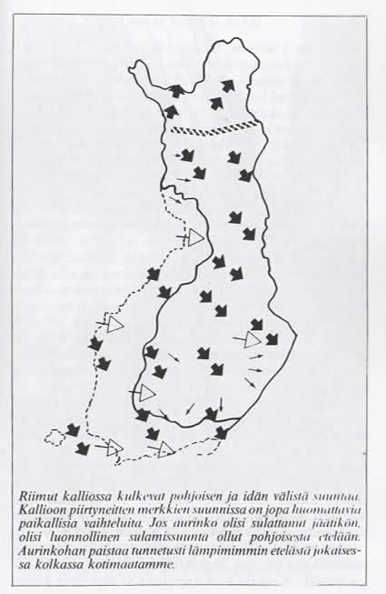
Царапины на скале проходят в направлении между севером и востоком. Существуют даже значительные местные различия в направлениях этих царапин. Если бы солнце растопило ледник, то естественным направлением таяния было бы с севера на юг. Ведь солнце теплее всего светит с юга в каждом уголке нашей страны.
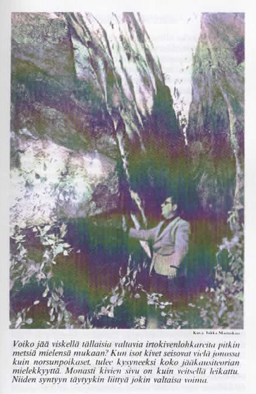
Может ли лёд по своей прихоти разбрасывать такие огромные валуны по лесам? Когда большые камни ещё стоят в ряд друг за другом как слонята, это вызывает вопрос о смысле всей ледниковой теории. Часто стороня камней как будто срезана ножом. В их создании должна быть задействована какая-то могущественная сила.
2. Мамонты и деревья на леднике
Мамонт является самым известным животным, найденным в вечной мерзлоте. В Ленинградском зоологическом музее находится мамонт, которого нашли в Сибири в 1902 году. Его выкопали из берегового откоса реки Березовки совершенно неповреждённым, и он был наполовину в стоячем положении. Во рту животного были неразмороженные одуванчики, а в его животе неразмороженная пища.
Обнаружение свежего корма во рту и глотке мамонта указывает на моментальную смерть животного, так как оно неуспело даже проглотить пищу. Загадкой является также быстрое замораживание мамонта и его попадание под слой земли. На протяжении тысяч лет животное сохранялось настолько неповрежденным, что учёные даже смогли сделать на ужин жаркое.
Профессор Бъёрн Куртен (Björn Olof Lennartson Kurtén), эксперт по ледниковому периоду, аккуратно объясняет тайну этого мамонта в своей книге «Ледниковый период».
«Это животное умерло более 39 000 лет назад вероятно потому, что оно упало в размытую в земле весенним половодьем расщелину. Тело замерзало постепенно, но до этого, часть мяса и все внутренности, за исключением желудка, успели сгнить. Из желудка было взято несколько килограммов содержимого на анализы. Позднее по анализам пыльцы присутствующей в желудке стало понятно, в какой окружающей среде жил и умер этот мамонт. Его окружающая среда была совершенно безлесной тундрой, в которой росли только травы. Обнаруженные в желудке некоторые древесные частицы пыльцы, возможно, залетели в тундру с юга из далёкой лесотундры. Многие из частей пыльцы были ещё в ранней стадии, что указывает на то, что мамонт умер в первой половине лета, как раз, тогда, когда трава начала цвести».
Учёный отвергает описание находки замороженного и хорошо сохранившегося мамонта и описывает в своей книге почему-то сгнившее животное. По его мнению, от мамонта сохранился только желудок. Когда гора мяса величиной со слона сваливается в расщелину и погибает, разложение начинается сразу. Процесс гниения начинается изнутри, и в таком случае желудок не смог бы сохраниться.
Эксперты холодильной промышленности подсчитали, что для замораживания мамонта размером со слона с толстой шерстью, необходимы невероятно низкие температуры. В наше время для этого недостаточно даже Сибирских морозов, измеряющихся ниже -70˚С. Такой холод, который сможет превратить мамонта в лёд за мгновение, должен был бы появиться из другого источника. Только приближающиеся к абсолютному нулю температуры (по шкале Цельсия абсолютному нулю соответствует температура −273,15°C) могут глубоко заморозить мамонта настолько основательно, что он может сохраниться на протяжении тысячелетий.
Был ли этот мамонт способен упасть посреди ледникового периода в расщелину, размытую в земле весенним половодьем? На Аляске и в Сибири были выкопаны и выкапывают постоянно сотни и сотни мамонтов, часть из них полностью сохранившиеся. Доказывает ли Куртен падение в полынью одного единственного мамонта, или это объяснение подходит ко всем другим сотням мамонтам, которых обнажила вечная мерзлота?
Удивляет ещё то, что в Советском Союзе в Якутии постоянно выкапывают мамонтов, и их кости полностью соответствуют запросам производства слоновой кости в сырье. В 1982 году в Ленинграде организовали аукцион, на котором продавали, в том числе, и сотни бивней мамонтов в качестве сырья для промышленного производства слоновой кости.
Наука ещё не очень хорошо изучила область вечной мерзлоты Северной Якутии. Эта область поставляет из своих недр хорошо сохранившихся мамонтов. Из ледяных глыб тут и там поднимаются вверх чёрные пирамиды, которые являются землёй, содержащей в себе лёд. Внутри же земли находятся кучами краснеющие кости и туши мамонтов. Когда делают находки в таких больших масштабах, нельзя больше говорить об уничтожении мамонтов весенним половодьем.
Куртен оставляет также необъяснённым, как мамонт добывал себе пищу в тундре ледникового периода. Такое животное, размером со слона и одного рода с ним, нуждается ежедневно примерно в 200 кг корма и в 150 литрах воды. Откуда мамонт ежедневно мог наскребать такое количество корма?
Куртен представляет, что мамонт использовал свои огромные бивни в качестве лопаты, откапывая ими корм из-под снега. Даже ребёнок знает, что под снегом трава не растёт. Узкие бивни не являются хорошими лопатами, больше это похоже на попытку вилами очистить дорожку зимой от снега. Когда повсюду ледяной холод, то с нахождением водопоя будут проблемы. Каждый день надо было бы найти 150 литров воды при 60-70 градусов мороза.
Всемирно известный учёный Бьёрн Куртен снова продолжает в своей книге «Ледниковый период»:
«… и превыше всего являются замершие мамонты Сибири и Аляски. Их возраст определённый радиоуглеродным методом составляет от 11 450 лет до более 44 000 лет… На этом основании понятно, что не одна единственная катастрофа повлияла на глубокое замораживание мамонтов. Это только одно из многих заблуждений, связанных с загадкой обледеневших мамонтов.»
Куртен говорит о катастрофах, хотя по теории не было никаких катастроф. Соответственно с ледниковой теорией климат Земли медленно охлаждался, а затем снова нагревался.
Пыльцу деревьев, взятую из желудка мамонта, Куртен объясняет, как залетевшую в рот мамонта из далёкого юга, т. к. среда обитания мамонта была безлесная тундра, в которой росла лишь трава. Ледниковый период и трава. Лето, цветут лютики. Пыльца летит мамонту в рот. Мамонт ест лишайник как олень или траву как овца? У думающего читателя появляется несоответствие между взглядами учёных и логическими выводами обнаруженых находок.
Кроме огромного числа мамонтов, в зоне современной тундры выкопаны львы, антилопы, овцы, коровы и даже крокодилы. Эти животные не приспособлены к жизни в суровых арктических условиях. Однако эти аргументы почему-то обычно забываются.
Кроме целых животных в тайниках вечной мерзлоты были найдены также их оторванные части тела. Какая природная сила способна оторвать голову слону, когда он ест? По мнению учёных, такое могло произойти, например, так: слон ел что-то с большого дерева. Стихия повалила дерево, и голова слона оборвалась. Красивое объяснение всё же не даёт возможность понять, почему глаза этого слона были открыты и заморожены мгновенно. Такую находку обнаружили в мерзлоте на Аляске, где сначала было найдено тело слона, а потом уже — его голова.
Вечная мерзлота Аляски содержит в себе миллионы тонн мяса животных. К такому суждению можно прийти, читая о ней описание в книге «Природа мира. Северная Америка» Ивар Сандерссон (Maailman luonto. Pohjois-Amerikka. Ivar Sandersson) 1968.
«В арктических областях вечная мерзлота может достигать десятки и даже сотни метров в глубину, и она может на разной глубине содержать плотные слои древнего льда… Загадкой является то, что вечная мерзлота на Аляске и в Сибири может содержать значительное количество костей и мяса, наполовину сгнившую растительность и прочие реликты растительного и животного мира.
Местами они могут образовывать значительную часть от всей почвы… Довольно большую часть реликтов составляют большие животные, такие, как покрытые шерстью носороги, гигантские львы, гигантские бобры, огромные буйволы, овцебыки и мамонты, а также покрытые шерстью слоны… Также очень много реликтов огромных деревьев, в том числе покрытосеменных лиственных деревьев».
Почему все учебники молчат об этих находках? Если тундру Аляски скрывали огромные лиственные деревья, тогда становиться понятно, что это была не тундра. Эти деревья росли в тёплых условиях влажных тропических лесов.
В книге «Природа мира» Ивар Сандерссон размышлял о возможных изменениях климата в Аляске: «Поэтому понятно, что Аляска до замерзания была по климату намного теплее и что её необходимо полностью расположить на внешней стороне арктической области. В северной части полярного круга очевидно непростым может быть распределение солнечного света и тепла в разные времена года, чтобы, такие растения могли бы расти, и ещё в большом количестве, чтобы поддерживать большое количество животных… Большое число огромных мамонтов сохранено замёрзшими в земле, многие были здоровыми и их живот был наполнен пищей, когда они умерли. Современная скудная растительность тундры не в состоянии прокормить животных, которые нуждаются в тоннах свежей пищи, ведь растительность тундры можно использовать только несколько месяцев в году».
Спрятанные под тундрой животные и деревья являются великой загадкой, которую нельзя обойти, пожимая плечами. Также нельзя Аляску развернуть на экватор, она всегда была там, где и сейчас.
В 1971 году мировая пресса крутила опубликованную ТАСС новость о найденной окаменелости крокодила в северной части полярного круга. Шахтёры, жители Советского Союза, обнаружили кладбище доисторических крокодилов в угольной шахте, находящейся в северной части полярного круга в г. Инта Республики Коми. Окаменелые крокодилы были захоронены внутри угольного пласта, откуда рабочие их осторожно высекли.
Исследователи Советского Союза предполагают, что на данной территории, на сегодняшний день области холодного климата, доминировал десятки тысяч лет назад тропический климат. В населённых крокодилами тёплых озёрах водились ещё и змеи, земноводные и водоплавающие птицы. По мнению учёных Советского Союза с изменением климата, озёра изменялись в трясины и после этого в болота и, в конце концов, в глубокие угольные пласты, в защите которых окаменелости крокодилов сохранились до наших дней.
Учёные Советского Союза пытаются объяснить, как всё постепенно произошло, но здесь забывают опять о том, что, если животные умерли бы от голода, тогда они автоматически начали бы портиться.
Российская наука одобрила в соответствии с теорией, выдвинутой в книге Куртена, начало ледникового периода 500 000 лет назад. Однако, когда говорят об определении возраста крокодилов в десятки тысяч лет, тогда посреди этого периода Сибири пришлось бы быть тропиками.
Другая новость. ТАСС рассказывает о находке мамонтёнка на северо-востоке Сибири в июне 1977 года. Маленький коричневый мамонтёнок умер в возрасте девяти лет примерно 10 000 лет назад.
Мамонтёнка обнаружили в связи с разведочными работами по вскрытию предполагаемого золотоносного месторождения. Бульдозер обнажил глыбу льда, внутри которой малыш сохранялся десять тысяч лет. Этот отлично сохранившийся мамонтёнок, названный Димой, представлен в Ленинградском зоологическом музее.
Учёные предполагали, что превосходно сохранившийся Дима даст много ценных сведений микробиологам и исследователям крови. Теперь специалисты не смогут больше говорить про сгнившего мамонта, у которого остался целым только желудок. Кровяные сосуды Димы были замершими и его кровь сохранилась неизменной на протяжении тысяч лет. Клетки мамонтёнка также были глубоко заморожены и сохранились настолько неповреждёнными, что специалисты попытались посадить клетки Димы в матку живого слона. Таким образом, надеялись получить генетически новое поколение мамонтов.
Дима является также прекрасным свидетельством того, как учёные определяют возраст. Когда Диму нашли, его возраст определили в 10 000 лет, потом возраст увеличился до 12 000 лет. Когда того же самого мамонтёнка отправили в Лондон для показа, его возраст за время пути возрос уже до 39 000 лет. Выглядит так, что для зрителей недостаточно возраста 10 000 лет. Зверь тем ценнее, чем старше его возраст. Экскурсоводы Ленинградского музея с удовольствием говорят о миллионах лет, когда представляют мамонтов туристам.
Каким же образом этот мамонтёнок был исследован? Его возраст не попытались определить радиоуглеродным методом. Основанием для определения было то, какое представление у исследователей имеется о ледниковом периоде и о его завершении. Складывается впечатление, что учёные даже не пытаются серьёзно искать ответ на эти проблемы. Если хочешь разобраться в этой загадке, то лучше забыть ледниковую теорию и искать ответ в другом месте.
Кроме животных из тайников вечной мерзлоты достают ещё многочисленные деревья и другие растения, которые когда-то росли в этих краях. Здесь, в северных регионах, обнаружены следы тропических растений и лиственных деревьев более тёплых областей.
В связи с земляными работами на канале в п. Вуотсо (Vuotso) было обнаружено древнее дерево на глубине десяти метров, на дне канала. Ширина годовых колец этого дерева превышала 3 мм. Возраст дерева по годовым кольцам исчислялся в 400 лет. Его массивность и толщина ветвей свидетельствовали о том, что дерево произрастало в весьма благоприятных условиях.
Дерево доставили в государственный техническо-исследовательский центр для изучения, где определили его возраст в 49 000 лет назад. Эксперты установили, что это дерево сосна и оно росло в Лапландии в тёплом межледниковом периоде более 80 000 лет назад.
Однако шведские коллеги утверждали, что это не сосна, а лиственница. Они тоже удивлялись солидным 3 мм ширины годовым кольцам, но их объяснение было таким, что в плодородной почве при росте дерева годовые кольца растут вместе. После того как им рассказали, что местом произрастания этой лиственницы была Лапландия, тогда великое изумление охватило учёных из Швеции.
Самым старым найденным деревом Финляндии является дерево Вуотсо. 49 000 лет - это большой период времени, но для учёных он является всё же недостаточным. Дело в том, что датировка этого дерева рушила всю их прекрасную ледниковую теорию.
В университете г. Турку доктор наук Мауно Пюокяри (Mauno Pyökäri) представляет в своей диссертации «Тысячелетнее развитие мерцающих пляжей», что после окончания последнего тёплого периода примерно 70 000 – 80 000 лет назад начался самый поздний из периодов оледенения или Вюрм-Вислинское оледенение. По мнению Пюокяри, континентальный ледник простирался от Скандинавских гор за пределы Финляндии и был более обширным в период 50 000 лет назад, когда Финляндию покрывал 2-3 километровой толщины ледник. Если возраст дерева Вуотсо был бы, по утверждению государственного техническо-исследовательского центра 49 000 лет назад, тогда 400-летней лиственнице надо было расти внутри льда. Представить общественному мнению противоречивые факты учёные не осмелились. Вместо этого они объяснили, что произрастание лиственницы Вуотсо в Лапландии вероятно было 80 000 – 120 000 лет назад. Такое объяснение прекрасно сочетается с преобладающим представлением, и проблему снова просто обошли. Тогда возникает вопрос, как это дерево попало под десятиметровый слой земли и сохранялось все эти тысячелетия?
Большое количество старинных деревьев было найдено в разных частях земного шара, например, окаменелые леса Антарктиды и Колорадо, в тундрах Аляски и Сибири. Даже посреди песков африканской пустыни, среди вечной засухи был обнаружен длинный ствол дерева толщиной в метр. В Финляндии выкапывают много находок деревьев в том числе в Энонтекиё (Enontekiö) в Лапландии и в Айтонева (Aitoneva) в Кихниё (Kihniö). Эти деревья хранятся в университете Турку.
Определение возраста всех этих деревьев даёт ключ к разгадке. Их возраст оценён в 4000 – 5000 лет назад. Учёным этот ключ всё-таки не подошёл. По их мнению, деревья росли в межледниковый период и их не смущал тот факт, что в некоторых случаях территория произрастания должна была быть расположена на дне моря.
Возраст деревьев, разбросанных по земному шару, указывает на то, что ледникового периода никогда не было. Вместо этой теории было бы логично сделать совершенно обратное заключение. Климат земного шара до периода 4 000 – 5 000 лет назад был тёплым и только после него произошли изменения.
Равнодушие учёных в решении таких головоломок даёт пример последующим. Так, например, в результате забора песка на побережье Аиристо (Airiston ranta) рядом с Турку были обнаружены наслоения 10 – 40 см толщины, которые не являются песком. Наслоения открываются на глубине десяти метров. Эта, ничего не значащая, находка для поставщика песка оказалась превосходным удобрением. Местное население пользуется им для того, чтобы удобрять свои сады.
Когда пробу этого вещества отправили на экспертизу в лабораторию, то оказалось, что в веществе было 80% фосфатов или вещество было органическим удобрением. Эксперты университета Турку определили вещество как дроблёный ракушечник. Никаких дополнительных исследований больше не проводилось. Засохшая ракушка напоминает гравий. Это же вещество напротив напоминает муку грубого помола, размельчённое животное мясо – фосфаты.
Все выше представленные примеры свидетельствуют вместе и в отдельности о масштабе этой огромной тайны, перед которой находятся учёные и всё человеческое общество. Простые объяснения ледникового периода не способны дать убедительных ответов на появляющиеся из-под земли всё новые и новые загадки. Как животные тропического климата могли прижиться в арктических условиях? Если условия обитания действительно были суровыми то тогда, как они добывали достаточную для своего проживания пищу? Как широколиственные деревья могли прижиться в холодных северных условиях? На эти вопросы современная наука не способна дать удовлетворительные ответы.
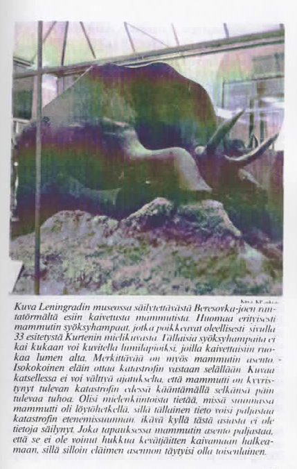
Фотография К. Парккунена
Фотография мамонта раскопанного на берегу реки Берёзовки и хранящегося в Ленинградском музее. Особое внимание обратите на бивни мамонта, которые существенно отличаются от изображения Куртена, представленного ниже. Думаю, что никто не может себе представить такие бивни в виде лапат для снега, которыми можно было бы выкопать себе еду из под снега.
Значимо также положение мамонта. Крупное животное приготовилось принять удар (катастрофу) на спину. Смотря на изображение нельзя отделиться от мысли, что мамонт сжался в комок перед грядущей катастрофой, повернувшись спиной к надвигающемуся уничтожению. Было бы интересно также знать, в каком направлении был мамонт в момент нахождения, потому что такая информация может раскрыть направление катастрофы. К сожалению, никаких сведений по этому поводу не сохранилось. В любом случае положение мамонта раскрывает, что он не мог утонуть в трещине, потому что тогда положение животного должно было быть иным.
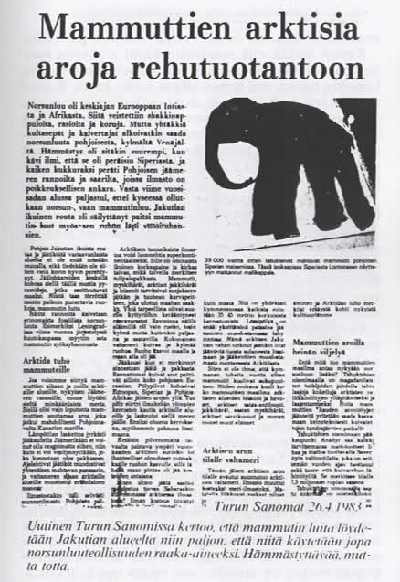
В газете «Турун Саномат» сообщается, что бивни мамонта встречаются в Якутии в таком изобилии, что их даже используют в качестве сырья для производства слоновой кости. Удивительно, но это правда.
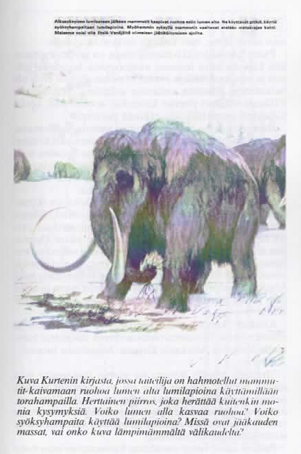
Заглавие к рисунку: После снегопада в начале осени мамонты откапывают траву из под снега. Они используют свои длинные бивни в качестве лопат. Позже осенью мамонты мигрируют на юг к границе леса. Возможный пейзаж времени последнего оледенения на юге России.
Рисунок из книги Куртена, где художник изобразил мамонтов роющих траву из под снега, используя свои бивни в качестве лопат. Милый рисунок, который, однако, вызывает много вопросов. Может ли трава расти под снегом? Возможно ли использовать бивни как лопаты? Где толщи льда ледникового периода, или это рисунок более теплого межледниковья?
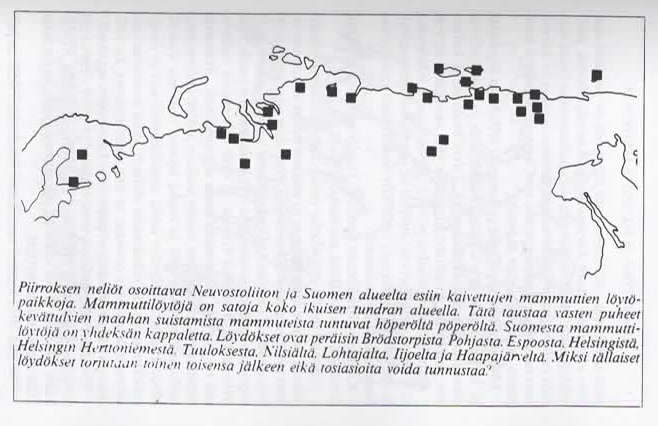
Квадратами на рисунке показаны места находок мамонтов, раскопанных на территории Советского Союза и Финляндии. В зоне тундры таких находок сотни. На этом фоне разговоры о мамонтах, сметённых весенним половодьем кажутся глупыми. В Финляндии девять мест обнаружения мамонтов. Находки были сделаны: в Брёдсторпа в Похье, в Эспо, в Хельсинки, в Херттониеми Хельсинки, в Туулос, в Нильсия, в Лохтая, в Иийоки и в Хаапаярви. Почему такие находки отвергаются одна за другой и факты не признаются?
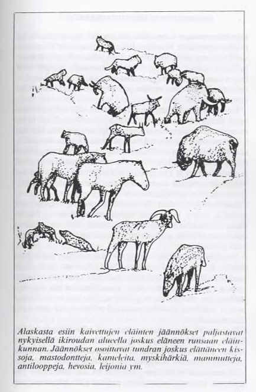
Останки животных, раскопанные на Аляске, свидетельствуют о богатом разнообразии животного мира, которое когда-то жило в нынешней зоне вечной мерзлоты. Останки показывают, что когда-то в тундре обитали кошки, мастодонты, верблюды, овцебыки, мамонты, антилопы, лошади, львы и т.д.
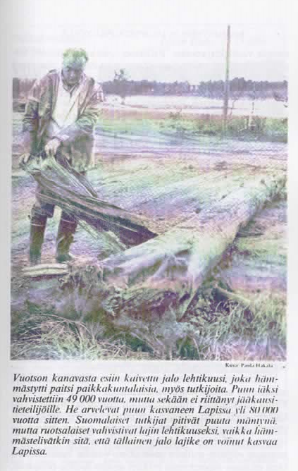
Лиственница, раскопанная в канале Вуотсо, поразила не только местных жителей, но и исследователей. Было подтвержденно, что возраст дерева составляет 49 000 лет, но даже этого учёным ледникового периода оказалось недостаточным. Они полагают, что дерево расло в Лапландии более 80 000 лет назад. Финские исследователи предположили, что это была сосна, но шведы определили вид как лиственницу, хотя и удивлялись, что в Лапландии могла вырасти такая благородная разновидность.
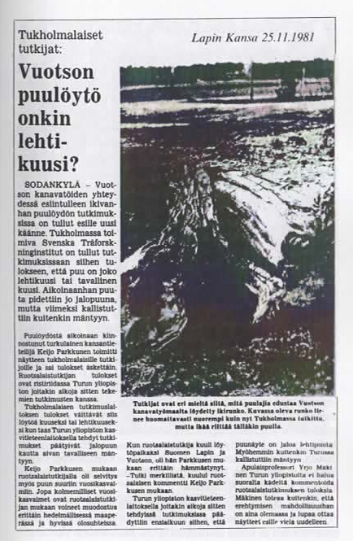
Статья из газыты «Лапин Канса» 25.11.1981.
Описание к изображению статьи: Исследователи расходятся во мнении относительно того, какую породу деревьев представляет собой ствол, найденный на месте стройки канала Вуотсо. Ствол на снимке, вероятно, значительно моложе рассмотренного в Стокгольме, но и это дерево достаточно старое.
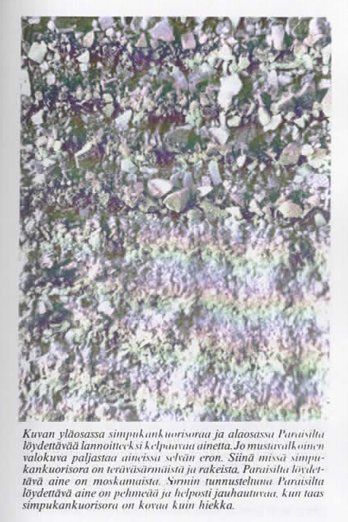
В верхней части изображения — гравий из ракушек, а в нижней — вещество, найденное в Парайси подходящее для удобрений. Даже на черно-белом фото видна явная разница в материалах. В то время как гравий из ракушек имеет острые края и зернистость, вещество, найденное в Парайси, порошкообразное. На ощупь оно мягкое и легко измельчается, а гравий из ракушки твёрдый как песок.
3. Чёртовы мельницы
Ледниковые выбоины, или как их ещё называют «чёртовы мельницы», столетиями пленяют воображение. Они словно визитные карточки какого-то события.
Самая большая ледниковая выбоина Финляндии находиться в Рованиеми. Её диаметр больше 3 м, а глубина приближается к 12 м. В местечке Аскола (Askola) рядом с г. Порво (Porvo) находится скала, в которой более 20 выбоин разного размера. Самая большая из них 10 м глубиной и 3 м шириной. Вообще же в Финляндии находится свыше 2 000 маленьких выбоин.
В соответствии с официальным объяснением ледниковые выбоины возникли так: талая вода ледникового периода кружила камни, которые по ходу движения обдирали скалистую поверхность и образовывали выбоину. В пустых ледниковых выбоинах на дне всегда оставлено два или три токарных камня для того, чтобы каждый смог догадаться, как появились выбоины.
Научное объяснение способа их появления вызывает много вопросов. Могла ли тающая граница ледника оставаться на том же самом месте на протяжении сотен лет? Способна ли вода, вообще, в ходе течения достичь таких скоростей, чтобы проточить выбоину в скале?
В Финляндии много порогов, в которых вода течёт с большой скоростью. Тем не менее, неизвестно ни одной выбоины, которая появилась бы за последние два или три столетия. Почему же сегодня больше не появляется этих выбоин? На побережье Финляндии находятся тысячи и тысячи камней, но ни под одним из них нет ямы, которая свидетельствовала бы, что в процессе их кружения можно просверлить дыру в скале. Всё это заставляет сомневаться в том, что камни и вода способны сделать огромные выбоины.
С другой стороны, предполагается, что какое-то количество ледниковых выбоин ещё находится под водой. Так как поверхность земли постоянно поднимается, то в будущем на высохших участках их появится ещё больше. Уже получены ссылки о ледниковых выбоинах, находящихся на морском дне. Житель города Турку водолаз Рурик Корпела (Rurik Korpela) нашёл в ходе своей работы огромную ледниковую выбоину в проливе Бьёркё (Björkön salmi). Она находится на глубине 9 м. По наблюдению Корпела глубина выбоины достигает более 20 м. Её диаметр приблизительно 6 – 8 м.
Во всех ледниковых выбоинах один общий рисунок, о котором не говорится ни в одном государственном учебнике Финляндии. Вдоль стены каждой выбоины тянется глубокая борозда. Эта винтообразная нарезка начинается с её поверхности и продолжается, опускаясь спиралью до самого дна. Способны ли камни сделать подобное в процессе движения?
В разных частях Финляндии встречаются огромные каменные поля, скальные глыбы и моренные гряды, которые скрывают внутри себя больше тайн, чем снаружи. Я хотел бы заглянуть в их тайны и найти им разгадки.
В Турку на скалах горы Нуннавуори (Nunnavuori) есть каменное поле, 100 м в длину и 70 м в ширину и несколько метров в толщину, где находятся круглые камни разной величины. Это место называется Чёртовым полем (Pirupelto) и с ним связаны различные народные сказания.
У меня возник вопрос, откуда могли появиться эти десятки тысяч камней. Этот же вопрос журналисты задали учёным. Ответ был таким: поле является результатом какого-то ледникового этапа. Исследователи из университета Турку считают каменное поле старинным берегом моря. Это, конечно же, является правдой, так как и Гималаи, и Скалистые горы тоже до этого были морским дном.
Вразумительного ответа всё же не прозвучало. Как же море образовало эти десятки тысяч камней? Вода когда-то покрывала эти камни. По времени это заняло бы пару столетий. После этого береговая линия была отодвинута из-за поднятия земной поверхности настолько далеко, что вода больше не доставала до камней. Только сильный шторм был бы способен ещё поднять воду на их уровень. Как тогда камни этого поля смогли появиться?
Эту загадку смогли бы решить, если бы кто-нибудь получил разрешение выкопать посреди поля 5 – 8 м яму, так, чтобы обнажить скалистое дно. Работа не была бы большой и не стоила бы дорого. К сожалению, это так и не было сделано.
Так как никто не хотел этим заниматься, я решил сам провести эксперимент. Один подрядчик согласился мне помочь. Мы договорились с ним сделать яму таким образом, чтобы не повредить деревья. Экскаватор начал работу.
Когда я вернулся назад, то обнаружил к своему ужасу, машина не могла сдвинуться с места, потому что под гусеницами были камни круглые как дробь. Я знал, что поднимется шумиха.
Через неделю авторитетные учёные университета подняли такой крик о случившемся: «Чёртово поле испорчено, старинный морской берег уничтожен». Новости были такими как, будто произошло землетрясение, и тысячи людей погибли.
Чёртово поле оставалось нетронутым, был сделан только маленький след. Оно всё ещё скрывает свою тайну. Я всё ещё готов исследовать Чёртово поле, как только для этого представиться возможность.
Я верю, что Чёртово поле - это гиганская выбоина. На метровой глубине камни становятся меньше и круглее. На глубине в несколько метров были обнаружены «металлические» камни такие же, как и в других исследованых мною выбоинах. Весь огромный холм, находящийся рядом с Чёртовым полем, является следствием великой катастрофы. Она размолотила гору на маленькие кусочки, о чём свидетельствуют камни Чёртового поля. На месте находятся также громадные каменные глыбы, которые никто не смог бы туда принести.
Тайна выбоин содержит в себе нечто другое, не похожее на обоснования геологов. Их объяснения на практике не соответствуют действительности.
Я разговаривал со многими людьми о выбоинах и к счастью нашёл выбоину на островной части Ботнического залива в Драгсфьярде (Dragsfjärd), которую смог освободить от воды.
О выбоине в Драгсфьярде были опубликованы сведения, в соответствии с которыми её глубина составляет примерно метр. Когда мы осушили всю выбоину, её глубина оказалась 5,5 м. Ширина у выбоины была 9,5 м и длина 12 м. Объем составил 627 м³. Благодаря этим измерениям выбоина в Драгсфьярде стала самой большой в Финляндии.
Профессор Эделман (Edelman) из академии Або (Åbo Akademi) утверждает, что существуют выбоины морского берега, порогов и ледникового периода. Так, например, следуя его мнению, выбоину в Драгсфьярде надо отнести к выбоинам морского происхождения. Она находится на побережье и следовательно её появление - результат работы прибоя: волны кружили камни и появилась выбоина. Но в какое время она была сделана?
В Турку есть памятник на горе Вартиовуори (Vartiovuori), который рассказывает на каком уровне было море 7 000 лет назад. В соответствии с этим знаком Турку тогда находился под поверхностью моря. Возможно, что выбоина, находящаяся в Драгсфьярде была тогда, и ещё долго после этого, морским дном.
Береговая линия моря не находится постоянно на месте, так как поверхность моря снижается или земная поверхность повышается на один метр за 100 лет.
Если бы такая выбоина не получилась за пару столетий, она не появилась бы вообще. За этот период поверхность моря снизилась на пару метров и вода не смогла бы больше покрывать выбоину. Эделман всё же утверждает, что за двести лет это легко могло произоити, так как благодаря круговому движению камней сдирается твёрдый материал. Сегодня на скалистом побережье моря можно увидеть много камней, но не под одним из них нет ямы и уж тем более выбоины.
Выбоина в Драгсфьярде просуществовала тысячи лет и обнаружилась она только тогда, когда поднятие земной поверхности вынесло её на сушу.
После опустошения выбоины в Драгсфьярде нам посчастливилось найти ещё одну выбоину, которая находится на территории Науво (Rymättylän Kattiluodossa Nauvon kunta) в местечке Каттилуото в Рюмяттюля. Она была особенно интересной. Выбоина была совершенно нетронутой. Только я принялся за «дело» вместе со своими друзьями, как в воздухе снова запахло гарью, похожей на скандал с Чёртовым полем. Я поспешил в канцелярию Науво подать документы на предоставление права освоения месторождения.
С бумагой в три марки в кармане я вернулся довольный обратно к выбоине. Тем временем кто-то успел сделать заявление в полицию, что на острове занимаются хулиганством. Полицейская патрульная лодка прибыла с проверкой на место. Это были спокойные полицейские, которые констатировали: «Хорошо, что кто-то обратил внимание на туристические достопримечательности, чтобы их расчистить и сделать узнаваемыми».
Вот так мы приступили к тяжёлой работе по освобождению выбоины. Она подтвердила то же, что мы уже обнаружили во всех других выбоинах. Чёткая желобообразная резьба начинается с поверхности скалы и продолжается, углубляясь метр за метром до самого дна. Выбоина в Рюмяттюля оказалась семиметровой глубины, и на каждом метре в стене были видны винтовые нарезы, спускающиеся вниз к основанию.
Каким образом округлые токарные камни могли бы прокопать углубление винтообразными бороздами в твёрдой скалистой поверхности? Могут ли они вообще когда-нибудь такое сделать? И чем больше эта мысль крутилась в моей голове, тем меньше это представлялось возможным.
Каждому под силу провести простой опыт, в котором вся эта теория о токарных камнях превращается в хлам. В бытовых условиях это можно сделать так: наполнить, а затем спустить воду в раковине. Вещество, находящееся в крутящейся воде, никогда не стремиться в сторону края, но всегда занимает центральное место. Чем больше скорость крутящихся движений воды, тем сильнее вещество стремиться занять положение в центре кружения воды.
Против теории о токарных камнях говорит ещё тот факт, что выбоины наполнены камнями. Их количество настолько велико, насколько вообще возможно поместить в подобное отверстие. Вдобавок ко всему камни заполняют выбоину так плотно, что чтобы отделить их друг от друга, необходимо воспользоваться ломом. По теории ледникового периода токарные камни сначала сформировали выбоину, и только после этого она уже наполнилась содержимым. Против этого утверждения говорит ещё то, что камни изменяются в цвете метр за метром по ходу углубления таким же образом, как и окружающая выбоину скала. Неизбежно на ум приходит, что камни, находящиеся в выбоине, были вырваны именно из этой скалы, где и была просверлена сама выбоина.
Для того, чтобы такая теория имела место, зарождение выбоины надо бы приурочить к впечатляющиму жару, который расплавил скалу, пробурил в ней и сформировал выбоину. В то время как выбоина была в расплавленном состоянии, она поворачивалась и крошилась на тысячи камней, оставляя следы, которые видны на стенах в каждой выбоине.
О том, что во время зарождения выбоина была расплавленной массой, свидетельствуют камни, найденные в самой выбоине.

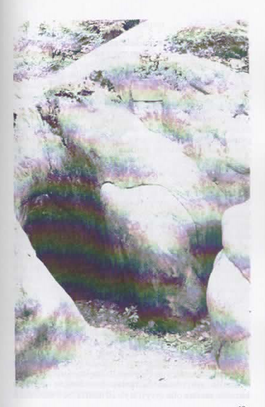
Согласно объяснениям учёных выбоины появились в разные эпохи. На верхнем снимке самая большая выбоина Финляндии, которая находится в деревне Хирвас вблизи г. Рованиеми. Эта выбоина была создана талыми водами ледникового периода, а это означает, что углубление было выкопано где-то 10 000 лет назад. Рядом расположен снимок двойной выбоины, находящейся в г. Иматре и, согласно пояснениям, она сформировалась в скале около 4500 лет назад. Это произошло в то время, когда воды Вуоксы разорвали русло порогов Иматры и одновременно создали десятки выбоин в её скалистой породе. Выбоины, расположенные на берегу моря, предположительно являются результатом работы прибрежных волн, но их точное возникновение определить сложно.
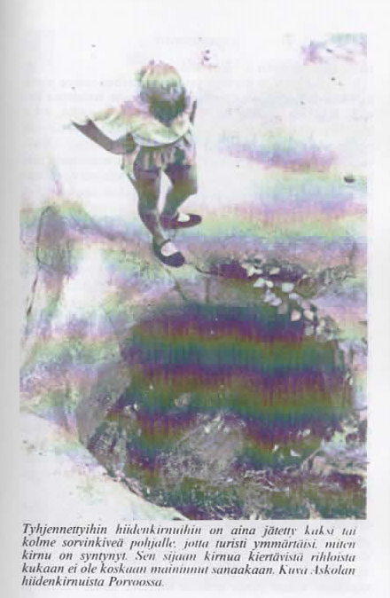
На дне опустошенной выбоины всегда оставляют два-три токарных камня, чтобы турист мог понять, как возникла выбоина. С другой стороны, никто никогда не упомянал ни слова о спиральных канавках. Изображение выбоины Аскола в г. Порво.
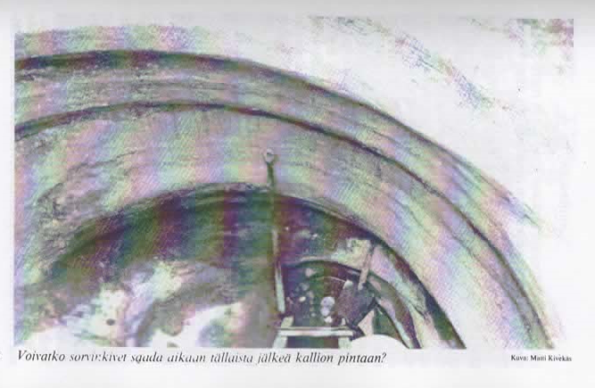
Фотография Матти Кивекяс
Могут ли токарные камни оставить такие следы на скальной поверхности?
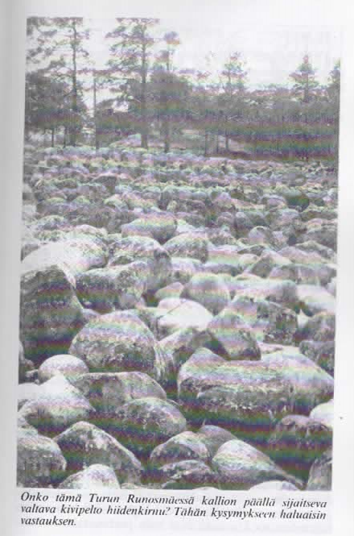
Является ли это огромное каменное поле, находящееся на скале в Руносмяки г. Турку, выбоиной? Я хотел бы получить ответ на этот вопрос.
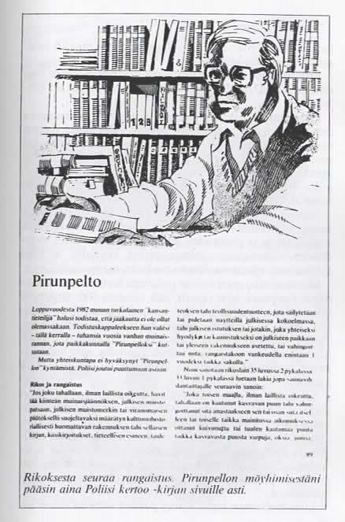
Преступление наказывается. Я добрался до страниц книги «Полиция рассказывает» из-за моего перекапывания Чёртого поля.
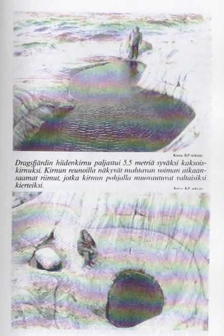
Фотография из архива Кейо Парккунена.
Выбоина Драгсфьярда оказалась двойной и глубиной 5,5 метра. На краях выбоины видны борозды созданные могучей силой, которые на дне образуются в огромные спирали.
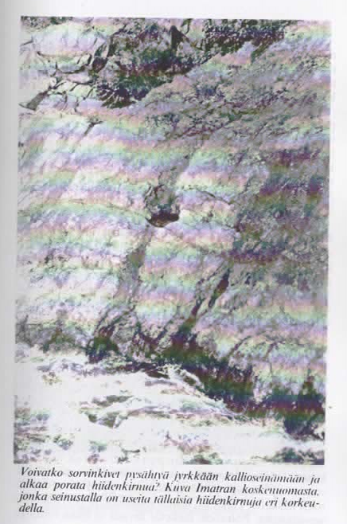
Могут ли токарные камни остановиться на крутом склоне скалы и начать сверлить выбоину? Фотография с порогов Иматры, где на стенах русла реки расположено много таких выбоин на разной высоте.
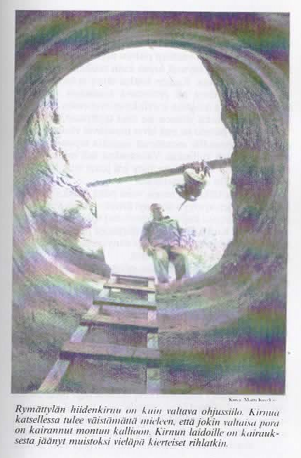
Выбоина Рюмяттюля похожа на огромную ракетную шахту. Глядя на выбоину, неизбежно приходит на ум, что в скале просверлило дыру какое-то огромное сверло. В напоминание об этом по бокам выбоины остались даже спиральные бороздки.
4. Камни «ледниковых» выбоин
В Финляндии опустошено много ледниковых выбоин, но никто никогда не интересовался находящимися в них камнями. Их при опустошении выбрасывали как мусор, чтобы они не мешали видеть токарные камни. При опустошении выбоины в Рюмяттюля я решил исследовать также и камни, которыми была заполнена эта выбоина.
Опустошение выбоины не является лёгким делом. В ней, особенно в верхней части, находятся каменные глыбы огромных размеров, которые иногда и двум мужчинам нелегко вытащить. К тому же камни в выбоине лежат так плотно, что необходимо использовать лом для того, чтобы оторвать их друг от друга. Нам предстояло поднять на поверхность каменный материал объёмом в 30 м³, и эта работа продвигалась довольно медленно.
Структура залегания камней в выбоине была интересной. На её поверхности находятся в основном большие каменные глыбы, но по ходу углубления размер камней уменьшается, хотя в составе встречаются также и большие камни. На дне выбоины большинство камней были настолько маленькие, что их можно было черпать горстью. Оценивая на глаз, кажется, что в выбоине всего только несколько сотен глыб, однако их количество может превысить десятки тысяч штук.
Метр за метром продвигалась работа по освобождению выбоины. Винтовые нарезы продолжали следовать равномерно при движении вглубь. Дно показалось, когда спустились вниз на семь метров. Ширина выбоины была два метра. Откалывая камни, казалось, что они как будто приварены друг к другу. Складывалось такое представление, что огромный цилиндр был когда-то стремительно, быстро повернут, измельчая содержимое на куски до тех пор, пока движение резко не остановилось. Крайние камни вклинивались плоской стороной в винтообразный танец. Круговое движение остановилось всей своей массой, примерно также, как, если бы машинная тормозная колодка была прижата на мертво. Вся выбоина из тысячи камней прекратила двигаться и застыла.
Выбоину образуют десятки тысяч огромных и маленьких камней, и поэтому теория о токарных камнях вызывает только смех. Какой же должна быть эта сила, которая заставила этот «котёл каши» двигаться и вертеться. Об этом можно только догадываться. Нахождение выбоины в Рюмяттюля и её опустошение послужило началом дискуссии в обществе об механизме появления подобных выбоин.
Это было началом чудесных открытий. Исследуя выбоину ближе ко дну, нам начали попадаться удивительные камни. В их группе были кремнеивые камни, которых в Финляндии по идее невозможно найти. Существование кремния в этих котлах по-настоящему является загадкой, которая заставляет задуматься. Если кремнеивые камни здесь появились, то это свидетельствует о том, что в выбоинах был колоссальный жар.
В кремниевой долине в Калифорнии отделяют чистый кремний, и для этого требуется жар в десятки тысяч градусов. Вдобавок к этому необходимо огромное давление, которое будет сжимать находящийся в расплавленном состоянии кремний в единый кусок. На основе анализа камней приходишь к выводу, что в выбоинах этот жар присутствовал только один раз. Он расплавил всё содержимое в единую кашу и разделил элементы друг от друга. Так возникли кремниевые камни, которые, как напоминание об этом, остались на дне выбоины. Теперь читатель догадается, почему у меня возник такой интерес иследовать Чёртово поле. Если Чёртово поле относится к выбоине, а я в это верю, то оно должно содержать в себе такие же кремниевые камни.
Кроме кремния в выбоинах есть ещё и «металлические» камни. Их встретилось несколько сотен маленьких, но были также камни размером с кулак. Под конец количество «металлических» камней возросло до десятков килограмм. Особенностью состава таких камней была смесь кремния и стали. Оба вещества расплавелись в одно и то же время, затем они смешались друг с другом на глубине 6 — 8 метров и сформировали эти камни, которые нигде больше нельзя встретить. Выбоина можно сравнить с местом для обжига или плавильной печью, чего никто не мог даже представить.
Существенной особенностью этих металлических и кремниевых камней является их твёрдость. Алмаз считается самым твёрдым из минералов земного шара. Его твёрдость обозначают числом 10 (шкала Мооса). Алмаз режет стекло и все камни, твёрдость которых выше 7. Камни выбоины способны с лёгкостью царапать стекло, что указывает на их твёрдость, а также на то, что они испытали огромный жар. Я попытался просверлить камни в обычной мастерской, но никакие свёрла не смогли с этим справиться. Только сверлом с алмазным напылением получилось оставить след на их поверхности. Откуда мог бы появиться жар, расплавивший эти камни? Очевидно, что здесь больше не уместны объяснения о талых водах ледника. Я показывал камни разным учёным. Одни из них говорили, что камни были подкопаны из реликтовой расстаявшей руды. Другие предполагали в них черты метеоритов, но, когда я показал их экспертам финского музея камня, моему удивлению не было предела.
Эксперты финского музея камня считают, что камни выбоины относятся к осадочным камням. Я впервые столкнулся с верованием геологии, которое называется «осадочное учение». В соответствии с этим учением кремний отложился в камнях за тысячи, а то и за миллионы лет. Если камень достаточно долго находится на одном и том же месте, тогда туда дополнительно собираются эти вещества. Если в камне чистый кремний, это означает, что он отложился в камне в виде отдельного образования. Вокруг него в свою очередь должны были бы отложиться металлы твёрдые как сталь.
Кремний расплавляют при десятках тысяч градусов жары. После чего его приводят к беспорядочному сжатию в процессе остывания. Только тогда кремний считается чистым и готов к применению в качестве сырья. Если бы это учение об отложениях имело место, тогда золото должно тоже отлагаться, но золото не откладывается подобным образом. Его плавят из добытой руды также как железо, никель и медь. В Лапландии и на Аляске находят тем не менее золото и даже большими самородками. Могло ли оно отложиться? На мой взгляд, нет. Его появление на Аляске и в Лапландии нужно приурочить к тому же жару, который сформировал камни выбоины.
Твёрдость кремниевых и «металлических» камней заставляет задаться вопросом: как сжать вещество до твердости стали? Эта загадка начала проясняться в ходе исследования известняковых камней, также найденных нами в выбоине. В разных слоях залегания известняки были разной степени твёрдости. Одни из них были чистым мелом, которым можно писать так же, как и обычным мелом для рисования. Но встречались и другие известняки, твёрдые, как мрамор. Все они были образованы из одного и того же самого вещества, но к их происхождению нужно приурочить огромное давление. Выбоина, возможно, была огромным котлом, в котором давление на разной глубине было разным, и поэтому вещество сжало по-разному.
Если камни выбоины появились из скалы, в которой она находилась, то в ней так же должны содержаться и первоначальные вещества, из которых известняковые камни были сформированы. Эта теория подтвердилась найденными нами камнями, у которых одна сторона была мягкая, как мел, а другая твёрдая, как кремний. Благодаря этим находкам мы пришли к заключению о том, что на разной глубине выбоины жар и давление произвели разные соединения.
По ледниковой теории камни были принесены в выбоины со льдом. Эта идея представляется совершенно невозможной при рассмотрении камней в их разнообразии. Были ли меловые камни отправлены внутри льда из Англии? Прислали ли кремниевые камни с северных берегов Германии? Какие еще камни пришли по «ледниковой почте» из каких частей Европы? На боку написан адрес: в выбоину Каттилуо, Рюмяттюля, Финляндия. Спасибо. Если представим в соответствии с ледниковой теорией как это могло происходить, то, тогда это выглядело так: лёд, отступая до Рюмяттюля, красиво бросил камень в отверстие, и дело было сделано. Но что, если выбоина в Рюмяттюля была морского происхождения, тогда кто позаботился о почтовых доставках?
Было время, когда я ходил купаться на озеро в Кярсямяки (Kärsämäki). Помню меня удивляли железные штуки, которые я находил на его дне. Они были сильно проржавевшие. Я размышлял о том, когда же руда этого озера появилась. Подходит ли к данной ситуации учение об отложениях? Как железо могло бы отложиться на дне озера, учитывая тот факт, что вода в то же самое время губит его? Когда-то железо всё же образовалось на дне озера. Оно появляется в результате плавления железистого песка при достаточно жарких температурах. Если же эти железные образования сейчас находят проржавевшими на дне озера, то значит с момента их появления прошло какое-то время.
Когда-то должно было произоити плавление, которое произвело это железо. Я считаю, что происхождение этого песка и появление железа, которое из него выплавилось, необходимо связать. Если бы песок был результатом растирания скальной основы в ледниковый период, то тогда вероятно чистое железо стёрлось бы вместе с песком предполагаемых десять тысяч лет назад? По-моему же, железо и зарождение песка указывают на глобальную катастрофу.
Существование в природе различных чистых руд, наталкивает на мысль о том, что откуда-то должен был прийти огромный жар, чтобы совершить эту работу. Такой взгляд проливает свет также и на нахождение золота чистыми самородками. В природе золото, так же, как другие минералы и руды содержится в скальной породе. Чистые металлы не могут возникнуть от земного вулканизма. Тепла вулканов недостаточно для расплавления кремния и золота.
Каждый день перед нашими глазами находятся тысячи других загадок, сравнимых с выбоинами. За Пюхятунтури есть глубокое, в виде чаши, озеро между двумя сопками. Добраться до него очень сложно, т. к. между сопками особенно каменистое ущелье. Озеро называется Кархунйомалампи (Karhunjuomalampi) и имеет воронкообразную форму. Его диаметр примерно 50 метров. Место вокруг озера наполнено дроблёным щебнем, как будто его туда принесли прямо из дробилки.
Однажды открылась возможность изучить это озеро. Спортивные водолазы согласились исследовать его дно и посмотреть, что же в нём находится. Они определили, что это озеро глубиной 12 м. На его дне были обнаружены три пещеры, которые делают озеро ещё более интересным.
Это озеро появилось таким же образом, как и выбоины. Какая-то огромная сила разбила находящуюся здесь скалу на мелкие кусочки и произвольно рассыпала их по окресности. В то же время она вырубила глубокую серцевину озера. Слой каменной крошки достигает десятки метров. Есть ли кто-нибудь, кто поверил бы, что это работа льда? Каждая сопка Лапландии, овраг или горка свидетельствуют о чём-то другом.
Лучший пример о случившейся катастрофе земного шара мы можем увидеть в северном Квебеке в Канаде. Там найден огромный кратер, который сначала считали озером. Сейчас кратер был сфотографирован сверху и считается, что когда-то здесь произошло столкновение с метеоритом. Глубина этого кратера 400 м, а ширина составляет 4 км. Если бы здесь произошло столкновение с метеоритом, тогда следы были бы наверняка другими. Соответствующая правилу круглая дыра присоединяется к озеру Кархунйомалампи или к «ледниковым» выбоинам и представляет собой самую большую выбоину земного шара.
Если мы отвергнем ледниковую теорию и соберём воедино картину огромной катастрофы прошлого, того тотального бушевания на севере, то тогда обстоятельства получат более разумные объяснения. Кроме представленных выше выбоин, золота, металлов и песка, мы сможем также представить, как возникли огромные валуны и громадные моренные гряды.
В разных частях Финляндии находятся огромные валуны, которые человек даже сегодня, при помощи современнной техники, не способен заставить двигаться. Тем не менее, эти огромные каменные плиты и валуны иногда стоят, не смотря на силу тяжести, на крутых склонах, на скалах и где попало. Размышляя о масштабах катастрофы, которая способна просверлить скалу, расплавить её, разбить на кусочки огромные горы и растереть камни по своему усмотрению, тогда можно догадаться, как большие каменные глыбы способны оказаться на скалах. Также находится объяснение моренным грядам Финляндии, которые были сформированы в то же время. Исследуя внимательно поверхность земли и природные объекты, приходишь к выводу о том, что в прошлом произошла катастрофа глобального масштаба.
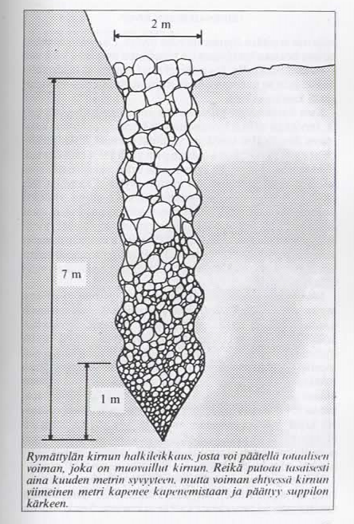
Поперечное сечение выбоины в Рюмяттюля, из чего можно сделать общий вывод о силе, сформировавшей выбоину. Отверстие уверено спускается до глубины шести метров, но при ослаблении силы выбоина сужается на последнем метре и заканчивается на кончике воронки.
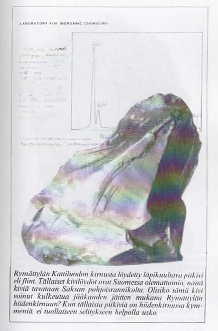
Полупрозрачный кремень, или, флинт, найденный в выбоине Каттилуото в Рюмяттюля. Подобных каменных находок в Финляндии нет, эти камни находят на северном побережье Германии. Мог ли этот камень быть перенесён в выбоину Рюмяттюля вместе со льдом ледникового периода? Когда таких кремней в выбоине десятки, в такое объяснение трудно поверить.
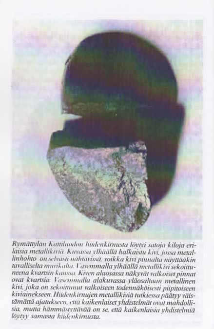

Сотни килограммов различных металлических камней были найдены в выбоине Каттилуото Рюмяттюля. На фото выше расколотый камень, где хорошо виден металлический блеск, на поверхности маслянистый камень выглядит как обычный кусок необработанного металла. Вверхе слева металлический камень смешанный с кварцем. Белые поверхности, видимые в нижней части этого камня, представляют собой кварц. Слева на нижнем рисунке вверху металлический камень, который смешанн с белым, вероятно, с кремнесодержащим веществом. Изучая металлические камни выбоины, неизбежно приходишь к мысли, что возможны абсолютно разные комбинации, но удивительно то, что их можно найти в одной и той же выбоине.
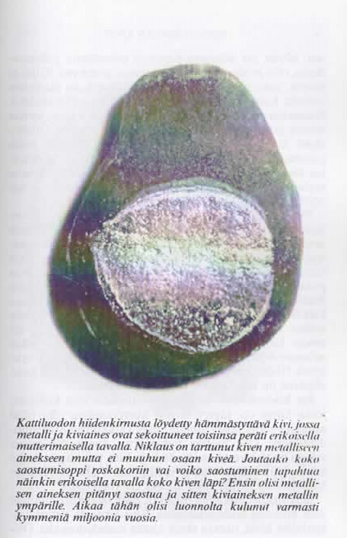
Удивительный камень, найденный в выбоине в Каттилуото, в котором металл и камень смешиваются особым образом на подобие ореха. Никелирование затронуло металлическую часть камня, а другие части нет. Отправляется ли вся теория осадочного происхождения в мусорный бак или всё же возможно чтобы отложение произошло особым образом внутри камня? Сначала должна была отложиться металлическая часть камня и затем уже вокруг неё каменная. Естественно, для этого прошли бы десятки миллионов лет.
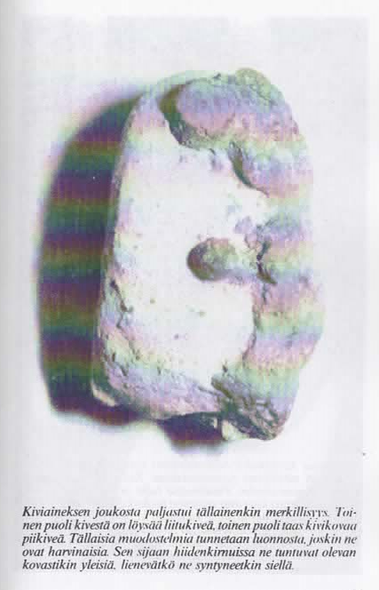
Среди каменного материала также обнаружена подобная особенность. Одна сторона камня — рыхлый мел, другая — твёрдый флинт. Такие образования известны в природе, хотя и редки. В выбоинах же, напротив, они встречаются очень часто и, возможно, что они там и возникли.

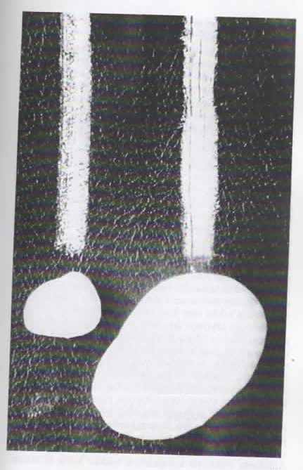
На верхнем снимке меловой камень, найденный в выбоине в Каттилуото, где отчётливо видны кремниевые конкреции. В выбоине найдено десятки таких камней. Неизбежно закрадывается мысль, что они здесь и появились, потому что вряд ли кто-то мог навозить туда камней кучами.
Справа находятся меловые камни, найденные в выбоине. Можно ещё поверить, что кто-то случайно уронил маленький камешек в выбоину, но когда такие камни попадаются постоянно, тогда теряешь веру в совпадения ледникового периода.
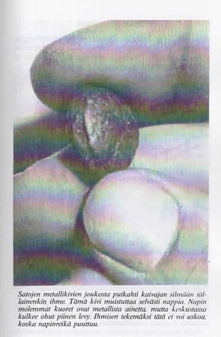
Среди сотен металлических камней на глаза землекопу попалось вот такое чудо. Этот камень явно напоминает пуговицу. Обе оболочки кнопки выполнены из металла, но в центре находится тонкая кремневая пластина. Не могу поверить, что это дело рук человека, потому что петлица отсутствует.
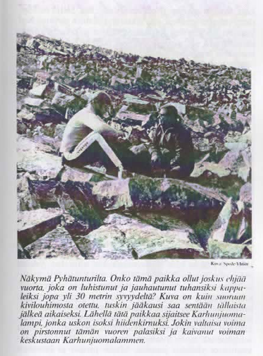
Вид с Пюхятунтури. Было ли это место когда-то целой горой, которая была обрушена и рассыпана на тысячи кусков даже в глубь более чем на 30 метров? Снимок выглядит так как будто он сделан из каменоломни, вряд ли ледниковый период может оставить такой след. Рядом с этим местом находится пруд Кархунйома, который я считаю большой выбоиной. Какая-то могучая сила раздробила эту гору на куски и вкопала Кархунйома в центре.
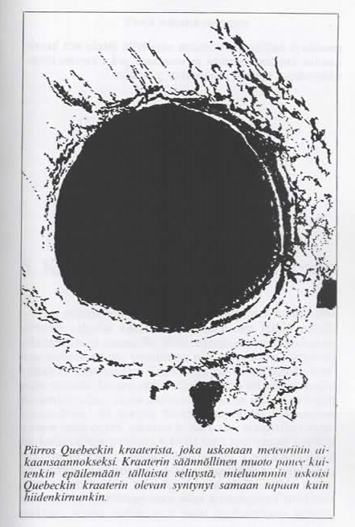
Рисунок кратера в Квебеке, который, как полагают, образовался от падения метеорита. Однако правильная форма кратера заставляет усомниться в таком объяснении, я скорее поверю, что кратер Квебека появился таким же образом, как и выбоины.
5. Природа созданная катастрофой
Следы глобальной катастрофы можно увидеть в самых неожиданных направлениях. При исследовании механизма зарождения выбоин мы выяснили, что к их появлению приурочен огромный жар. То непостижимое тепло, однажды побывавшее на земле даёт объяснение зарождению многих других веществ и явлений на поверхности земли, кроме выбоин. Не нужны более тёплые или холодные периоды в милионы лет в истории, колебания земного шара из стороны в сторону и ещё какие-нибудь далёкие, искусственно придуманные объяснения. Благодаря влияниям одной тотальной катастрофы и относящиеся к ней явления получают своё объяснение образование нефти и каменного угля. Болота Финляндии и других стран мира давно обесценились в глазах исследователей, их изучением никто не занимается, но и они тоже результат той катастрофы. Также к тому урагану можем отнести разрыв континентов и современную форму поверхности Земли.
Мышление современного человека изменилось. В связи с ростом современной индустрии началась мировая борьба за нефть. Обнаруженные огромные месторождения нефти в разных частях мира: в Сахаре, на Аляске, в Сибири приводят исследователей к вопросу. Как же появилась нефть на планете Земля?
В соответствии с утверждённой ледниковой теорией, нефть появилась сотни милионов лет назад на дне тогдашних морей из накопившихся маленьких организмов. Они были сжаты в каменные образования, из которых они затем преобразовались в нефть под влиянием давления и высокой температуры.
По-моему мнению, самым смешным утверждением является то, что нефть возникла из мелких морских организмов или планктона. Если бы происхождение нефти было таким, тогда её не нужно было бы больше улучшать. Вещество походило бы на машинное масло, тонкое и прозрачное, которое можно сразу залить в машинный бак. Но выкачиваемая из-под земли нефть вязкая, как смола. Она требует хорошей обработки, прежде чем из неё получат нефтепродукты.
Возможно ли, что огромное колличество маленьких организмов собралось на одном месте, а затем постепенно начало преобразовываться в нефть? Здесь, как и в других объяснениях, происходит мошенничество с числом лет. Так же, как и в ледниковой теории, так и теория эволюции сводит все процессы к милионам лет. У неспециалиста нет возможности что-то разумно понять. Остаётся только поверить учёным, что всё возможно.
Нефть — невозобновляемое полезное ископаемое. Сегодня подсчитывается, надолго ли хватит этого важного энергетического источника. Нефть больше не образуется в природе и нефтяные ресурсы не пополняются. Что же нефть из себя представляет? Она имеет органическое происхождение. Для появления нефти требуются также высокие температуры и давление. При наличии необходимых условий, нефть может зародиться в природе снова.
Выше мы уже рассуждали о катастрофе, которая привела к механизму зарождения выбоины, а также растопила кристаллические горные породы, то тогда мы можем представить зарождение нефти. По моему мнению, нефть - это органические остатки живших животных и людей в то время на земном шаре, которых настигла катастрофа. Она сложила и упаковала всю эту толпу, сожгла её в нефть и разбросала по поверхности Земли. Тот ураган скрыл свою работу под огромным давлением. Современный человек может пробить слой земли, покрывающий нефть, и увидеть изнутри место её залегания. Но нефть была найдена также на поверхности земли. Первые нефтяные озера были найдены в восточной Европе. Из этой нефти изготовили в 1700 годах керосин, который подходил в качестве горючего для масленных ламп и был лучше, чем известные в те времена растительные масла.
Современная техника сделала огромный скачок вперёд. На сегодняшний день наравне с органическими маслами изготавливают синтетические масла. В лабораторных условиях учёные способны изготовить масла также из органических отходов. Из тонны таких отходов они способны сделать бочку нефти за 20 минут. Были проведены измерения давления подземных месторождений нефти, которые указали на то, что образование нефти произошло около 10 000 лет назад. Если бы зарождение нефти было более 80 000 лет, как некоторые утверждают, то её давление исчезло бы уже давно.
Так же, как и нефть, каменный уголь является невозобновляемым природным ископаемым. Учёные говорят об особенном каменноугольном периоде, занявшем во временной шкале миллионы лет, во время которого и образовалось это вещество. Зарождение каменного угля следует такой же схеме, как и образование нефти, когда под высоким давлением и высокой температурой мёртвая растительность постепенно преобразовывалась в полезное ископаемое.
Если нефть является полезным ископаемым животного происхождения, то каменный уголь - растительного. Так же, как и нефть, он связан с той огромной катастрофой, которая сожгла растительность, сформировала её под большим давлением в пласты, которые сегодня нам известны как угольные шахты. Могут ли угольные шахты земного шара вообще быть в таких соответствующих правилам, последовательных образованиях, в которых они встречаются? Невозможно представить как на одном и том же месте и в одно и то же время была собрана огромная масса растительности.
Встречается много типов каменного угля. Они имеют одну и ту же причину возникновения, но условия зарождения немного отличались друг от друга. Исходя из этих обстоятельств мы можем сделать вывод о бушевавшем жаре в разных местах земного шара, а также о его силе и влиянии. На этом основании мы можем также сделать заключения о разных растительных составах, которые переродились одномоментно в углеродное соединение.
Драгоценные камни тоже образуются при определённом давлении и температуре. Так они способны кристаллизоваться в восхитительные формы, на которые приятно смотреть человеку. Сегодня драгоценности могут изготавливать искусственно способом плавки. У этих синтетически изготовленных веществ совершенно такой же химический состав, как и у найденных в природе драгоценностей. Неестественно ли тогда, что драгоценные камни образовались в природных условиях путём расплавления, когда все условия были благоприятными: жар катастрофы и наличие образуемого вешества.
Одним из важнейших качеств драгоценных камней является их твёрдость. Твёрдость камня формируется исключительно из-за огромного жара, который сжёг это так основательно, что ни один кристалл не остался несгоревшим. Мы не найдём такого жара на Земле, для этого недостаточно даже температур вулкана. Для совершенного обжигания алмаза нужны невероятные десятки тысяч градусные температуры. И, если драгоценности находят в таких местах, в которых ни при каких обстоятельствах не может быть вулканов, тогда они должны были появиться в такой момент времени, в котором на этой территории присутствовал жар, соответствующий их выплавки. На примере выбоин можно сделать вывод о том, что в этих природных плавильных печах происходило. Камни выбоин тверды как драгоценности, но компоненты камней выбоины и драгоценностей отличаются. Поэтому в выбоинах не найдены алмазы, но найден кремний, которого не должно было быть в Финляндии. Взамен этого в Финляндии есть много пригодных камней в качестве драгоценных. У нас найдены в том числе топазы и корунды, не говоря уже об упомянутом золоте.
Вдобавок к нефти и каменному углю на земном шаре существуют и другие отложения органического происхождения. Таковыми являются, к примеру, известняковые горы, возникновение которых можем предположить было таким же, как у нефти и у каменного угля. Если мы берём за точку отсчёта давление и жар произошедшей катастрофы, тогда возникает вопрос, как огромный жар преобразовал вещество в различные формы. Миллионы лет ошибочной ледниковой теории вводят всех в заблуждение. Вместо неё необходимо определить место для единственной катастрофы, которая создала благоприятные условия для нашего сегодняшнего благополучия.
Финские и мировые бездонные болота - это оригинальные памятники катастрофы, однажды случившейся на земном шаре. Болота всё ещё не изучены до конца. Их поместили отдельным звеном в цепи, в которой сначала должен появиться торф и затем каменный уголь. Но практика указывает на совершенно другое. По моему мнению, болота образовались в результате подтопления водой измельчённого катастрофой леса. Все деревья не были перемолоты в порошок во время зарождения болот. Они сохраняются в глубине болот до наших дней, как и слоны Аляски, и мамонты Сибири в разных глубинах земли.
На каком основании мы можем сделать вывод, что зарождение болот происходило в одно и то же время с катастрофой? Найденные деревья из обширных болот никогда не смогли бы вырасти на болоте большими. Если дерево росло на болоте, оно погибло бы ещё молодым, так как корни не могли бы удерживать огромную сосну на болоте в вертикальном положении. Если бездонные болота формировались бы медленно, выросшие на них деревья сгнили бы, и ни одного ствола сегодня не смогли бы извлечь на поверхность. Тем не менее в Финляндии из болот поднимают много массивных стволов деревьев. Их возраст определили в 4 000 — 5 100 лет. Так, например, возраст дерева из болота Кихнио (Kihniön suo) был измерен методом радиоизотопного датирования профессором Мартти Салми и составил 5 100 лет. Сегодня это дерево сохраняется в университете г. Турку.
В области Похъянмаа (Pohjanmaa) в шахте Виханти (Vihanti) на глубине сто метров нашли лес, возраст которого сочли старым. Металлургический завод сделал памятник о найденных деревьях, который передали торговому партнёру на посвящение: «Этот корень Оутокумпу Оу из шахты Виханти со сто метровой глубины. По оценке немецкого профессора, проводившего радиоизотопное исследование, корням 2 000 лет».
В этом случае мы определённо сталкиваемся с огромным противоречием. Где этот лес мог расти и как, если он найден на стометровой глубине? С другой стороны, мы знаем, что на этой территории Похъянмаа 2 000 лет назад была вода на 20-ти метровой высоте, поскольку земная поверхность поднимается, если верить расчётам исследователей ледникового периода. В таком случае, необходимо сделать вывод, что шахта Виханти была тогда дном моря. И уж точно ещё никто не видел леса, растущего на морском дне.
Следующей проблемой является лёд. Если ледниковый период существовал, тогда возникает вопрос. Образовались ли болота до начала ледникового периода или они сформировались после?
Если болота зародились ещё до ледникового периода, тогда огромная ледяная масса неизбежно выдавила бы болота наружу из своих углублений. Если же возраст болот определять на основании возраста выкопанных из них деревьев, придём к такому заключению, что они возникли после ледникового периода. Вряд ли кто-то даже предположит, что болота были причудой самого ледникового периода.
Исходя из условий предполагаемой высоты воды и поднятия земной поверхности многочисленные находки деревьев и их возрастные сроки могут выглядеть в «странном свете». Как я уже говорил, что дерево Кихнио по этой логике росло на дне моря и также найденные деревья в Вуотсо, возраст которых Калеви Мякинен (Kalevi Mäkinen) из геологического иследовательского учреждения определил 4 000 — 9 000 и выше 80 000 лет, росли на морском дне. Стоит спросить, где логика у современных учёных, когда такие глупости предлагаются общественности? Как мировые учёные могут быть такими единогласными о ледниковом периоде, если во всех других областях они сильно разделяются во мнениях?
При рассматривании карты земного шара невозможно избежать мысли, что все материки когда-то были едины. Они подходят по своим очертаниям друг к другу так же, как части пазла. Первым эту теорию дрейфа материков представил Альфред Лотар Вегенер в 1915 году, но его мнение вызвало большой отпор в научном кругу. Сегодня эта теория всё-таки утвердилась. Измерения магнитных полос земного шара на дне океана указывают так ясно, что материки находятся всё ещё и сегодня в медленном движении.
Вегенер задумывался также и о других противоречиях современной геологии. Он задавался вопросом, почему все самые большие горы представлены цепями на карте земного шара. Взглянув на карту мы можем заметить, что Гималаи, Альпы, Скалистые горы и Аппалачи формируют длинные и высокие горные гряды. Другая половина поверхности земного шара в основном ровная, больших перепадов по высоте нет.
Это обстоятельство делает ещё более удивительным то, что на высоких горах найдены реликты морского происхождения. Эти странности подтвердил ещё сто лет назад известный Чарльз Дарвин, который в горах Перу столкнулся со скилетом кита. Возможно, что тогда у Дарвина возник вопрос: как кит попал в горы, ведь он не летает и трудно представить у него возникновение крыльев даже за милиардный временной период? В горах также обнаружено много других реликтов морских животных, ракушки, рыбы и др. Находят на вершинах гор окаменелости происходящих из глубин океана.
В зоологии существуют загадки, которые указывают на существование связи между континентами. Существуют виды животных, которые живут на разных континентах далеко друг от друга без какой-либо связи. В соответствии с учением Дарвина, к примеру, австралийские и американские кенгуру должны были эволюционировать независимо друг от друга в одно и то же время, как в Австралии, так и в Америке. Подобные примеры найдены также и в растительном мире. Они свидетельствуют, что когда-то у таких животных и растений должна была существовать связь друг с другом.
Сегодня подтверждено, что материки когда-то были едины. С другой стороны, учёные едины во мнении о том, что формирование поверхности земного шара в древние времена было более равномерным, чем сейчас. В начале времён высоких гор не было, но самые высокие вершины поднимались возможно только на 1 000 метров. Теперь подходим к интересному предположению о том, что с того времени до наших дней прошло не миллионы лет, а всего тысячи. Это решение дало бы ответ на многие вопросы современной науки. Разрыв континентов и возникновение гор можем приурочить к той самой катастрофе, о которой уже сказано выше. На существование сообщения между континентами указывает также распространение людей по всем континентам. Если между континентами Африки и Южной Америки была связь, то странствование животных и людей в этих областях намного легче объясняется, чем то, что перемещение произошло через Берингов пролив. Мог ли кто-нибудь представить, что люди и животные отправились странствовать тысячи километров на встречу трёхкилометровому леднику, туда, где нет еды и питья. Скорее всего они с большим удовольствием остались бы в тёплом месте обитания, чем добровольно стремились бы в холод и к цели, о которой никто даже не имел представления.
Но если представим, что из Африки можно было проити в Южную Америку, получим разумное решение этой тайны. Люди и животные могли перемещаться постепенно на сторону Америки естественным и коротким путём, который предоставлял пропитание во время путешествия. Это объясняет ещё то, что испанцы по прибытии в Южную Америку столкнулись не с индийцами, а с большим числом других родов. Является ли легенда о затонувшей Атлантиде, волновавшая человечество, всё-таки правдой? Образовывал ли этот пропавший континент сообщение между Африкой и Южной Америкой? Когда катастрофа толкнула материк в движение, она утопила позднее Атлантиду в волнах Атлантического океана. Соединение между Африкой и Южной Америкой оборвалось, и Америка была забыта нашей половиной мира на тысячи лет. От этого не осталось и следа, разве что удивительно точные древние карты и несколько крох сведений в преданиях.
В свете истории современного человека удивляют города инков, которые находятся высоко в горах. Огромные строительные глыбы этих городов весят несколько тонн. Удивительно, кто мог бы строить в высоких горах такие города и почему они там построены, хотя можно было выбрать более низкие и более плодородные территории?
Что, если этих гор ещё не было, тогда, когда эти города были построены? В таком случае, решение получается само собой. Они находились на низменных территориях, примерно до 1 000 метров. Возможность строительства городов на этом уровне представляем вполне реально.
Озеро Титикака в горах Перу является самым высоко находящимся в мире пресноводным озером. Сушествование самого озера на такой высоте является загадкой, но, если взять за отправную точку поднятие гор, то, тогда всё становится на свои места. С начала это была долина, которая благодаря катастрофе, наполнилась водой и поднялась вместе с горами.
Для того, чтобы это произошло, нужно приурочить также к катастрофе огромное колличество воды, т. е. необходимо внезапное и обильное прибавление воды к уже имеющимся запасам земного шара. Во время катастрофы воды покрыли горы. Так получат своё объяснение ранее упомянутые останки морских животных, найденные на вершинах гор и появление озера Титикака.
Какое воздействие оказало внезапное прибавление такого количества воды? Прежде всего, это означало увеличение давления на континентальный шельф. Слабые части шельфов отрывались друг от друга и благодаря огромному давлению материки начали своё обособленное движение друг от друга. Даже сегодня континенты ещё не оправились от того удара катастрофы и продолжают тихо скользить. Например, Гренландия, как утверждают, двигается на пять сантиметров в год.
Но двигающая сила материков постоянно слабеет, и земной шар в будущем должен достигнуть стабильного состояния. Это будет проявляться в немногочисленных и всё ещё более слабых стихийных бедствиях, землятресениях и извержениях вулканов. Как извержения вулканов, так и землятресения происходят из-за движения литосферных плит. Нам известно о многих потрясающе сильных землятресениях и извержениях вулканов в прежние времена. К тому же сейчас мы точно знаем территории, на которых такие природные катастрофы могут произойти. Именно те территории и являются участками разрыва между литосферными плитами. В качестве утешения будущим поколениям можно констатировать, что, когда земной шар достигнет устойчивого состояния, природные бедствия прекратятся. Когда в начале заложенная сила катастрофы пропала, по крайней мере не нужно больше бояться её типичных последствий.
Как огромное прибавление воды распределилось по земному шару и что оно принесло, кроме разрывов континентальных плит? Дополнительный слой воды давил на земную кору и таким образом сделал для себя место. Так появились огромные погребальные впадины земного шара. Такие как, например, Марианская впадина 11 км глубины вмещает в себя огромное колличество воды. Едва ли кто-нибудь представляет, что такие формирования могли существовать всегда.
В тоже время, когда вода создавала пространство для себя, она поднимала земную поверхность. Тоже явление происходит при замесе теста, когда с одной стороны на него давят, оно поднимается с другой. Так появились самые высокие горы земного шара, которые по своей высоте совершенно отвечают глубинам впадин.
Если возьмём за отправную точку давление воды, можем посмотреть на подъём земной поверхности с другой стороны. В Финляндии земная поверхность поднимается примерно на один метр в год. Это длиться столько же, сколько вода продолжает давить, а земная поверхность подниматься. Это явление постоянно слабеет. Но вопрос не только в поднятии земной поверхности, но также о давлении воды. Это явление является плодом совместного воздействия этих двух факторов.
В соответствии с устоявшейся теорией, земная поверхность поднимается, потому что она во время ледникового периода испытывала давление под огромными массами льда и этот подъём сейчас продолжается 10 000 лет. Если причиной поднятия земной поверхности были бы только ледяные массы, то равновесие было бы достигнуто ещё тысячи лет назад. Универсальная теория с тестом лучше объясняет это явление, чем влияние ледяных масс.
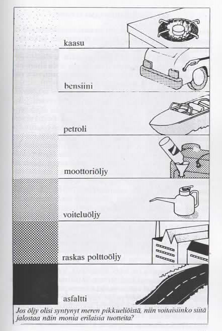
Если бы нефть образовалась из морских микроорганизмов, можно ли было бы производить из неё столько различных продуктов?
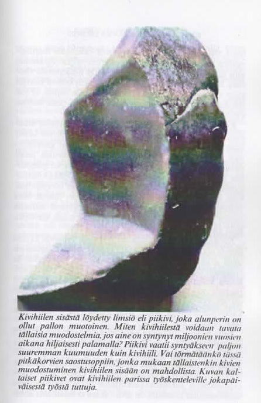
Флинт или кремень, найденный внунти угля, который изначально имел форму шара. Как можно найти подобное образование в угле, если вещество создавалось в течении миллионов лет путём спокойного горения? Для образования кремня требуется гораздо больше тепла, чем для образования угля. Упираемся ли мы опять в теорию осадочного происхождения, согласно которой возможно образование таких камней внутри угля. Подобные кремни, показанные на снимке, знакомы тем, кто работает с углём из повседневной работы.
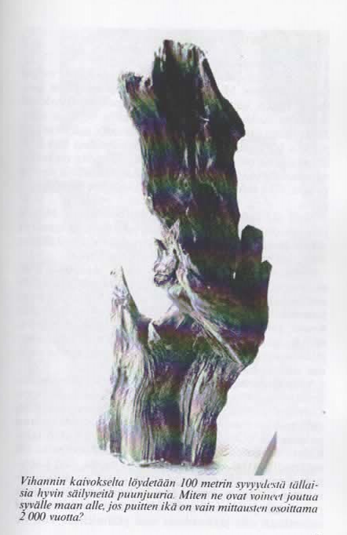
Такие хорошо сохранившиеся корни деревьев найдены на глубине 100 метров в шахте Виханти. Как они могли попасть так глубоко под землю, если возраст деревьев, как показывают измерения, составляет всего 2000 лет?
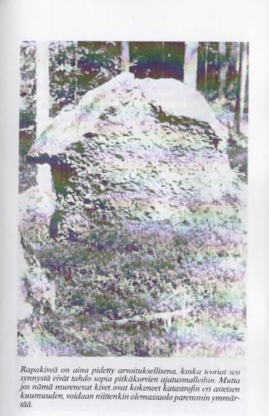
Рапакиви (фин. rapakivi — «гнилой или крошащийся камень») всегда считался загадочным, поскольку теории о его происхождении не желают вписываться в образ мышления учёных. Но если предположить, что эти осыпающиеся камни испытали разную степень жара катастрофы, то тогда возможно лучше понять их существование.
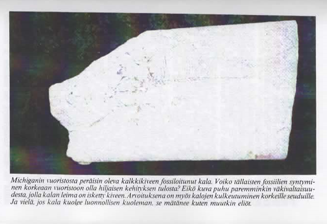
Окаменелая рыба в известняке гор Мичигана. Может ли появление таких окоменелостей в высоких горах быть результатом молчаливого развития? Разве картина не говорит о жестокости, с которой печать рыбы была нанесена на камень? Миграция рыб в высокогорные районы также является загадкой. И всё же, если рыба умирает естественной смертью, она гниёт, как и другие живые существа.
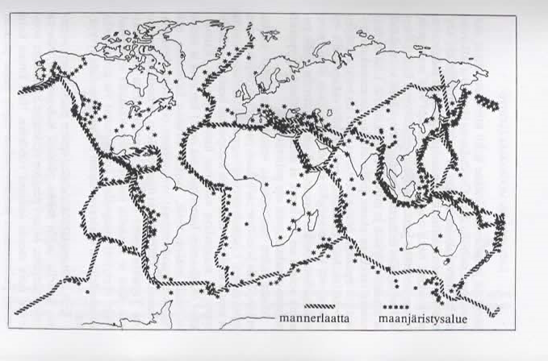
/ - континентальная плита
* - район землетрясения
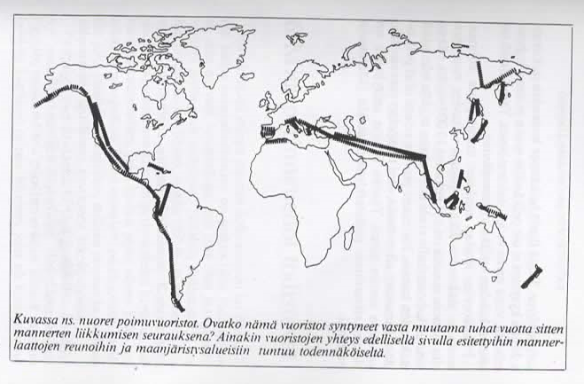
На картинке так называемые складчатые горы. Были ли эти горные хребты созданны всего несколько тысяч лет назад в результате движения континентов? По крайней мере, связь гор с краями континентальных плит и зонами землетрясений, показанными выше, кажется вероятной.
6. Что подтверждают предания
Если когда-то было внезапное поднятие уровня моря или увеличение объёма воды на нашем земном шаре, то об этом остались бы сведения. Таких документов земной шар полон, хотя к ним за последние сто лет относятся весьма пренебрежительно. Тем не менее предания более девяноста народов рассказывают об огромной катастрофе, которая однажды покрыла весь тогдашний земной шар. Это сказание записано в каждой стороне земного шара где-то в большей, а где-то в меньшей степени, перемешанной с поэтическим материалом.
Самый лучший рассказ об этом бушевании сохранился в семитской истории. Библия повествует как во время первой египетской мировой державы во дворце фараона вырос принц Моисей, который заинтересовался родственниками, живущими в рабстве. Он хотел выяснить историю своего народа, исследование которой в тоже время бросило свет также и на начальную стадию всего человечества. В результате этой работы Моисея появилась книга, в которой часть поэтического материала незначительна, а ценность в качестве исторического документа велика.
Отец геологии Чарльз Лайель (Charles Lyell) искусно утверждал, что Библия и другие предания являются сказками, в которые не стоит верить. Когда исследуем Библию и предания других народов о потопе с предвзятым мнением и, прежде всего, в сочетании с историей, из этих сказаний открываются удивительные вещи. Они больше показывают наше прошлое, чем рассказы ученых о ледниковом периоде. Если то, что земной шар сталкнулся с катастрофой, является фактом, тогда условия обитания на земном шаре до неё были другими. Это опять же заставляет увидеть рассказы о прежних временах совершенно в новом свете.
Продолжительные возраста жизни людей, описанные Библией, кажутся плодом воображения. Но, если мы предположим, что существование огромной катастрофы всё же было возможно, тогда у земного шара действительно был защитный водяной купол, упомянутый в Библии. Он представлял собой кольцевую систему, которая могла служить крышей земного шара и крутиться на баллистической дорожке, защищая земную поверхность от космической радиации. Когда пагубная космическая радиация не попадает на поверхность земли, клетки не уничтожаются и не умирают так быстро, как сегодня, когда средний возраст человека составляет всего лишь 75 лет.
Самый старый персонаж, представленный в Библии, Мафусаил умер в возрасте 969 лет. Обычно же средняя продолжительность жизни в прежние времена 900 лет. Очевидно, недостаток космической радиации был фактором, благодаря которому жизнь человека была такой длинной.
Сегодня считают, что пагубное воздействие космической радиации под водой на глубине 14 метров неопасно. Среди животных мы знаем кита и черепаху, как долгожителей, обитающих на глубине моря. Кит время от времени поднимается на поверхность моря только для того, чтобы вздохнуть. У черепахи есть ещё в качестве защиты толстый спинной панцирь. Верят, что некоторые черепахи живут даже несколько сотен лет.
Из Библии мы узнаём про внезапное падение продолжительности жизни людей. Тенденция к уменьшению стала проявляться сразу после потопа. Это могло быть связано с тем, что в результате крушения водного купола больше космической радиации стало достигать земной поверхности. У радиации было прямое влияное на продолжительность жизни людей. От поколения к поколению их продолжительность жизни снижалась от 500 до 100 лет. Откуда можно найти подтверждения тому, что когда-то люди действительно долго жили? Например, зубы могут свидетельствовать о возрасте человека. У лошадей они тоже являются определением возраста. Износ зубов указывает на возраст животного.
Тур Хейердал (Thor Heyerdahl) столкнулся со старыми человеческими черепами, когда находился на острове Пасхи. В своей книге Фату-Хива он описывает найденные черепа так: «Перед нашим отправлением мы осмотрели зубы всех черепов здесь в доевропейском захоронении, также даже у разволившихся подборотков, у которых зубы выпали в землю. Ни на одном из зубов не было видна даже намёка на кариес. Зубы были источены почти до кости подборотка».
Хейердал объясняет это явление так: «…возможно из-за песка, находящегося в еде, но дыр вообще не видел».
Когда находят такой довод, это обычно сразу же признают его неосноватльным. Хейердал провёл на острове Пасхи со своей молодой женой целый год и описал на отрове существовавшие прекрасные фруктовые деревья, от которых жители могли наслаждаться фруктами. Как же те старые жители могли быть на столько глупыми, чтобы есть песок, а не фрукты.
В университет Турку в своё время был доставлен для исследования череп 5 000 летней давности. Череп привёз профессор Паатеро (Paatero), посетивший вместе со шведской экспедицией историческую область Нубию в Египте. Череп очистили от песка и подтвердили его целостность. Учёные установили, что череп принадлежал женщине 30 лет, хотя зубы во рту были сильно стёрты. Также учёные предположили, что она ела песок.
У этой женщины молочные зубы успели смениться на новые, которые выросли, но прошло немного времени, как и от этих зубов практически ничего не осталось. На зубах не было обнаружено никакого кариеса. Ту же территорию посещали туристы, они удивлялись хорошим зубам стариков этой области. Со временем условия обитания там нисколько не изменились. Если профессионалы говорят правду, тогда у 80-летнего человека не должно быть зубов вообще, остались бы только десны.
Все ранние мировые легенды рассказывают об огромной катастрофе, когда воды покрыли под собой весь тогдашний мир.
Согласно рассказу преданий вода поднялась так высоко, что покрыла самые высокие вершины гор. Следовательно, ни о каком местном наводнении речь здесь не идёт. Если мы помним, что тогдашние самые высокие горы были возможно чуть более тысячи метров, тогда история является совершенно реалистичной. Современное количество воды земного шара хватило бы покрыть нашу землю 2,5 км слоем воды при условии, если наш земной шар был бы совершенно круглым.
Добавленый слой воды более килиметра толщиной давил на углубления в днищах морей, которые поддавались и опускались. Так появились рифтовые долины морей и впадины. В то же время горы стали подниматься выше.
Человек сохранился в той катастрофе. На земном шаре много легенд, в которых представляют выживание семени человечества посреди катастрофы в яйце. Когда мы разъясним, что означало слово «яйцо» с самого начала, сможем продвинуться вперёд в разгадке этих мифов. В раннем халдейском языке слово яйцо обозначает «baith», в более позднем «baietha». Как одну, так и другую её женскую форму слова произносят в языке таким же образом, как и слово обозначающее «дом». В соответствии с этимологией этого рассказа, яйцо ничего другого не означает как дом, внутри которого люди плавали во время катастрофы. Истории, затрагивающие огромную катастрофу, есть почти во всех мифах народов. В мифе северо-африканского племени Папаго рассказывают о золотом времени, которое закончилось ужасным наводнением. Оно уничтожило всё, кроме героя Монтезума и койота, который предупредил о наводнении. Вместе они построили лодку, на которой пережили бедствие.
В преданиях африканских пигмеев (Efe) рассказывается об Эфе, который спрятался в дупле дерева и благодаря этому выжил во время наводнения. В легенде индонезийского маори говорится о боге Тане, который разгневался на людей и побудил двух своих пророков построить дом. Они остались живы в своём доме и заметили после того как вода сошла, что все люди умерли.
В персидском мифе говорится о боге Ахурамазда, который предупредил героя Йима о надвегающейся катастрофе. Ему было велено построить огорождение и заготовить корма, собрать растения и людей. После наводнения всё погибло, кроме сада Йима.
Рассказывают ли эти сказки из разных уголков Земли все вместе об одном и в том же происшествии хотя и разными словами? У каждого народа похожие объяснения о случившейся катастрофе и о спасении. У этих мифов должен был быть один общий фактор, благодаря чему они появились. Этот фактор и есть событие. С другой стороны, независимо друг от друга эти мифы вообще не смогли бы сложиться, настолько похожими они оказались.
Миф об Атлантиде является рассказом о счастливом острове, о сильной державе и великой культуре, в которой архитектура была настолько прекрасной и значимой, что об этом говорили тысячи лет. Это неотъемлемо относится ко всему прошлому человечества. Атлантида - это загадка, отгадка которой могла бы помочь человечеству лучше понять своё прошлое.
Определено точное раположение Атлантиды в Атлантическом океане в виде настолько большого острова, что есть причина предположить существование перешейка в прошлом, который простирался через тогдашний океан от Африки до Америки. Это объясняет также то, как многие представленные виды животных обоих континентов были способны переместиться через Атлантиду как на один, так и на другой материк. Таким же способом пользовались и древние люди. Жителям Америки не нужен был способ учёных: шагать по ледяным сибирским степям к Берингову проливу и оттуда снова тысячи километров в Южную Америку. Они могли двигаться натуральным образом, кочуя через Атлантиду.
Повествуя нам об Атлантиде, Платон совершенно подробно определяет расположение острова. Атлантида находилась в огромном океане за Геракловыми столпами или Гибралтарским проливом. История действительно удивительная. Легенда изображает прекрасный мир, который испортился и погрузился в волны Атлантического океана. За один день и за одну ночь погибли все жители Атлантиды.
Появление легенды об Атлантиде приблизительно 12 000 лет назад. Интересно то, что календари майя, египетский и ассирийский начались всё с одного и того же времени. Первоначальной, отправной точкой в каждом выбран год 11 542. Есть ли у этих культур, находящихся на разных материках, точки соприкосновения друг с другом или начали ли они отсчёт времени с какого-то замеченного грандиозного события, которое сильно повлияло на всё общество?
Никакие календари древних держав и никакие предания ничего не говорят о ледниковом периоде. На Атлантиде была высокая культура, её флот свободно плавал по Средиземному морю. В то же время на Американском материке строили прекрасные дворцы и города, которым современные люди могут только удивляться.
Созданный Бьйорном Куртеном человек ледникового периода не был бы способен выжить. Эта задача безнадёжно превышала его способности. В тоже время когда на Атлантиде, в Америке и Египте были созданны высокие культуры, другая половина мира сражалась с трёхкилометровой толщины ледяной массой. На этом фоне ледниковый период предстаёт в смехотворном виде, но в защиту его надо сказать, что всей этой системе мышления только сто лет. Тем не менее до сегодняшнего дня эта теория является самый большым ошибочным шагом в науке.
Благодаря затронувшей земной шар катастрофе материки начали дрейфовать друг от друга. В качестве напоминания этому на дне Атлантического океана проходит континентальный разлом, который сегодня называют Срединно-Атлантическим хребетом. Он представлен подводными горами, находящимися посреди дна океана. Современные плиты континентов отодвинулись уже на 4 000 км расстояние друг от друга.
Если верить Платону, тогда Атлантида была большим материком между Африкой и Америкой. В процессе отдаления континентальных плит друг от друга этот несчастливый промежуточный материк погрузился в конечном итоге целиком в океан. Подобные случаи известны в истории. Например, Англия в своё время требовала себе остров Сабрина, который входил в состав Азорского архипелага. Спор затих, когда остров скрылся в волнах океана.
До тех пор пока не произошло погружение Атлантиды, между материками была сухопутная связь. Об этом свидетельствуют сочинения Платона, в которых он упоминул огромный остров Атлантида, из которого можно было попасть дальше на большой материк за морем.
Археологические реликты содержат изображения более ранних жителей Америки, которые не были индейцами. На изображениях видно людей обличённых, как в белые, так и в чёрные одежды, которые напоминают одежды средиземноморской культуры. Найденные изображения в Ла-Вента (в Мексике) представляют бородатых мужчин, у которых семитский нос с горбинкой. Также черты индейского рода не все являются азиатскими, в особенности орлиный нос. Многие, первыми прибывшие в Америку, испанские завоеватели представляют в своих рапортах сведения также о белокожих и чернокожих индейцах. Это тоже указывает на ошибочное утверждение, в соответствии с которым прародители индейцев пришли в Южную Америку через Берингов пролив из Азии.
На сегодняшний день многие развалины раскопаны, найдены и подняты города со дна моря. Все находки говорят о великой культуре, которая старее, чем построенные цивилизации нашего времени. В подтверждение этому легенды тихо повествуют о прошлом этих развалин.
Об Атлантиде написано свыше 20 000 книг. Эта загадка озадачивала человечество более 2 000 лет. Спрятавшаяся в волнах Атлантического океана она таким же образом, как все найденнные города, рассказывает об одном и том же деле. Для многих это нежелательное и неприятное разоблачение, потому что оно ломает мифы, которые построили современные учёные. Представления современной науки оказывают давление на человечество таким же образом, как и когда-то в прошлом, когда государство было сосредоточено на храмах.
Касающиеся Атлантиды сведения происходили из древнего Египта от довольно старого жреца. Ясно, что эти люди знали больше, чем мы сегодня. У них была летопись о своём прошлом, но для того чтобы скрыть своё прошлое, чтобы происхождения господствующих фараонов доходило до богов, они старательно врали, скрывали, а также уничтожали свои записи.
На земном шаре со временем затуманились знания и потерялись летописи, которые были не по нраву властелинам. Александрийская библиотека, одна из крупнейших библиотек древности, могла бы ответить на многие вопросы, но её сожгли. Тоже случилось с летописями майя и инков, которые иезуиты уничтожили, чтобы никакое прошлое не стояло у них на пути к власти. Никакое правительство даже сегодня не терпит невыгодной информации. Оно лучше утаит её, а поделиться той, которая им самим будет приносить пользу. Легенда об Атлантиде тоже по всей видимости отвечает этому фону. Она была передана Платону от Солона, который, в свою очередь, услышал её во времена правления Амона в Египте. Жрец, рассказавший историю, обильно смешал правду с льстивыми обстоятельствами. Почему? Для того чтобы эллинистический род мог быть древним и доходить до богов. Поднялась же Греция как пятая мировая держава, когда Персидская империя отступила. Между строк можно всё же найти зёрна правды, которые, правильно истолковывая, выведут нас на след прошлого.
Легенда об Атлантиде получит уже в ближайшем будующем своё подтверждение. В марте 1984 появилась новость о том, что советское исследовательское судно обнаружило, получило ссылки существования легендарного острова. Исследователи погружались на 200 метровую глубину и обнаружили подводную гору Ампери. На её поверхности они увидели сооружения напоминающие городские развалины. В этих развалинах можно представить древние комнаты, улицы и площади. Из-за начинающихся зимних штормов исследования были остановлены, но их надо продолжать сразу, как только условия на этой территории станут благоприятными.
Вероятно, это только вопрос времени, когда легенда об Атлантиде превратиться в правду. Древний город Троя долгое время считался сказкой до тех пор, пока немецкий бизнесмен не провёл раскопки, где и засвидетельствовал, что это правда. Очевидно, что произойдёт, когда история, рассказанная нам Платоном, получит своё подтверждение. Будет ли тогда у современных учёных что сказать в ответ на это? Может им надо просто признаться, что в мифологии истины больше, чем вымысла?
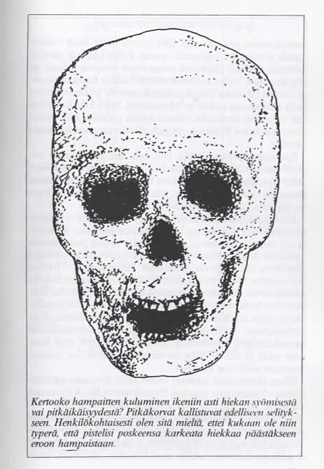
Износ зубов до самых дёсен указывает на употребление песка или на долголетие? Учёные склоняются к первому варианту. Лично я так не думаю, что кто-то на столько глуп, чтобы есть грубый песок.
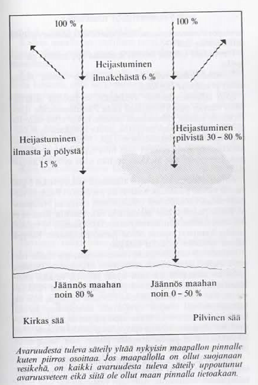
Излучение из космоса в настоящее время достигает поверхности Земли, как это показано на рисунке. Если Земля имела водное кольцо в качестве своей защиты, то вся радиация, приходящая из космоса, утопала в этой космической воде и на поверхности Земли от неё не было и следа.
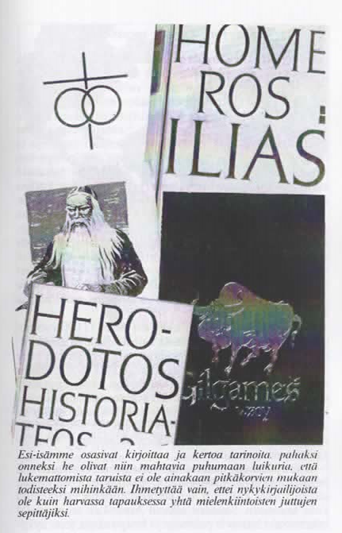
Наши предки умели писать и рассказывать истории, но, к сожалению, по мнению учёных всё множество этих историй ничего не доказывает. Просто удивительно, что среди современных авторов не редкость придумывать интересные рассказы.
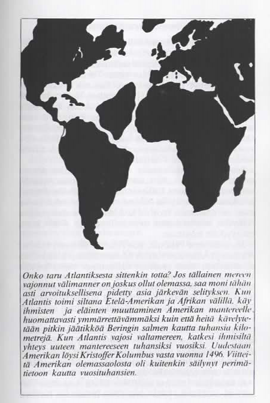
Правдива ли легенда об Атлантиде? Если бы такой затонувший субконтинент когда-то существовал, то многие вещи, считавшиеся до сих пор загадочными, получили бы своё разумное объяснение. Если Антлантида служила мостом между Южной Америкой и Африкой, то тогда гораздо понятнее как люди и животные перебрались на американский континент, чем то, что им пришлось пройти тысячи километров по леднику через Берингов пролив. Когда Антлантида погрузилась в океан, люди на тысячи лет потеряли связь с новым континентом. Заново Америку открыл Христофор Колумб лишь в 1496 году. Однако указания существования Америки сохранялись в преданиях на протяжении тысячелетий.
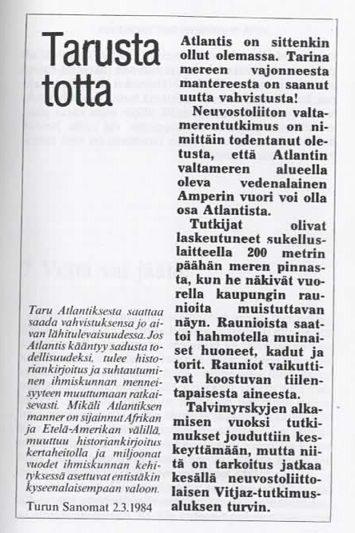
Статья из газеты «Turun sanomat» 02.03.1984 «Истина из мифа»
Миф об Атлантиде может получить подтверждение в самом ближайшем будущем. Если Атлантида превратится из сказки в реальность, то написание истории и отношение к прошлому человечества решительно изменится. А при условии, что континент располагался между Африкой и Южной Америкой, то написание истории изменится одним махом и миллионы лет развития человечества предстанут в ещё более сомнительном свете.
Атлантида всё-таки существовала. История о континенте, утонцвшем в море, получила новое подтверждение!
А именно, советская океанография подтвердила предположение о том, что подводная гора Ампери в районе Атлантического океана может быть частью Атлантиды.
Исследователи спустились на подводном аппарате на 200 метров от поверхности моря, когда увидели на горе зрелище, напоминающее руины города. Глядя на руины можно было себе представить древние помещения, улицы и рынки. Руины, казалось, состояли из вещества похожего на кирпич.
Из-за начавшихся зимних штормов исследования пришлось прекратить, но летом их планируют продолжить с помощью советского научно-исследовательского судна «Витязь».
7. Лёд или вода
Учёные скрыли прошлое человечества под трёхкилометровым слоем льда. Более века всем, найденным в результате раскопок, явлениям даются объяснения, обоснованные ледниковой теорией. Например, обнаруженные широколиственные леса в Лапландии, оказывается, росли в межледниковый, более тёплый период, мамонты выживали в суровых климатических условиях тундры, выкапывая из-под снега еду, ледяные горы сбрасывали огромные валуны и т. д. Ледниковый период, таким образом, проявлялся всегда и везде, формируя облик нашей планеты, но чем больше свидетельств находят, тем несуразнее объяснения им приписывают.
Все представленные в этой книге факты указывают на то, что климат земного шара в древности был другим. Все доказательства говорят, что климат был заметно теплее, чем сейчас.
Если уж мы в состоянии верить в ледниковый период, то тогда нам нетрудно представить совершенно другой мир. Когда-то на всём земном шаре, от его одного полюса до другого, господствовал тёплый и благоприятный климат, где процветала растительность тропического климата и многочисленный животный мир получал достаточно еды.
Мировые запасы воды огромны. Если поверхность Земли была бы ровной, как у резинового мячика, то тогда воды покрыли нашу планету слоем, превышающим 2,5 км. Каким же образом появилось столько воды? Мы знаем, что вода является результатом горения водорода (H₂+0,5O₂→ H₂O). Похоже, что земной шар был когда-то покрыт огромными газоводородными облаками. Когда же слой из газоводорода взорвался, в качестве результата появилась вода. В этом огромном взрывном давлении часть воды была выброшена в космос, а другая часть напротив стала давить на поверхность земли и образовала первоначальные моря.
Содержимым земного шара является горячая масса. Остывший поверхностный слой удивительно тонок. Если провести аналогию с апельсином, то остывший слой соответствует его корке, а горячая сердцевина Земли — самому фрукту. Остывшая вода, сжавшись, оказывала давление на молодую поверхность Земли. Так кора земного шара стала деформироваться и начался процесс горообразования. Количество воды первоначальных морей было намного меньше современных и потому моря были мелководные, но и образовавшиеся горы не превышали 1000 м. Это мнение разделяют все учёные, что на ранних стадиях у нашей планеты не было больших высотных различий.
Выброшенные в космос воды сформировали кольцевую систему вокруг нашей планеты, наподобие как у Сатурна. Эта водная масса толстыми кольцами огибала на своей баллистической траектории экваториальную зону и сужалась к полюсам. Космические водные массы сформировали купол для земного шара, который висел на высоте более 200 км. Земля была защищена под крышей, как огромная теплица. Из первичных морей кислород выделился в атмосферу, которая постепенно получила свой нынешний состав. Солнечный свет проходил к поверхности Земли через «космическое море». Климат земного шара отличался равномерным распределением температур, так как космический водный слой останавливал потерю тепла в космос.
На Земле были благоприятные условия для жизни. Одинаковая температура простиралась от полюса к полюсу. Суточные колебания температур были весьма незначительными, так как тепло не проникало обратно в космос через «космическое море». Климат был одинаковым на каждой стороне земного шара и современные жаркие пустынные территории или холодные тундры были ему совсем неизвестны.
В таких условиях растительность обильно распространилась по всей поверхности Земли, слоны и мамонты, а также тысячи других животных, наслаждались огромным изобилием еды. Пищу не нужно было выкапывать своими бивнями из-под снега, потому что снег был совершенно неизвестным явлением. Им нужно было только вытянуть свою шею и съесть желаемое. Окаменелые крокодилы, найденные в советских шахтах, при жизни наслаждались заболоченными тёплыми озёрами. Возможно всего 10 000 лет назад беззаботно бродил в группе своих сородичей десятилетний мамонтёнок Дима.
Существование «космического моря» благотворно влияло и на жизнь человека. Если сегодня радиация медленно разрушает живые клетки, то тогда у неё не было этой возможности. Она останавливалась в слое воды окружающей Землю. В таких условиях люди могли жить в десять раз дольше. Не удивительно, что проживя девятьсот лет у человека от зубов оставались маленькие пенёчки.
Защитная кольцевая система земного шара создала совершенные условия для жизни, но их наличие содержало также огромную опасность. Помеха движению этих водных масс могла привести их к столкновению с силой земного притяжения. В таком случае они стали бы орудием глобальной катастрофы.
В областях полюсов могут быть отклонения величины гравитационного поля Земли, т. к. на этих территориях, из-за движения Земли вокруг своей оси, центробежная сила самая слабая. Это явление хорошо знакомо благодаря отправленым в космос спутникам, когда происходят помехи на их орбитах. Орбита спутников изменяется и начинает приближаться к полярным областям. Когда спутник находится в полярной области, центробежная сила не способна больше удерживать его на орбите, а гравитационная сила земного шара завладевает им.
Таким же образом произошло и с американской орбитальной станцией Скайлеб, которая должна была по своей орбите обходить экватор. Станция выполняла безупречно свои задачи на протяжении 6 лет, но затем в траектории её полёта произошли нарушения. Орбита тела изменилась, в результате чего она всё больше и больше наклонялась в сторону полярных областей. Последний оборот станции обозначил сбой гравитационного поля Земли, вследствии чего сила тяжести получила преимущество над спутником и Скайлеб начал падать. Первые отломанные части упали на север Канады, а остальные обломки станции попали в море рядом с Австралией.
Нетрудно представить орбиту космических морей, как они кружились на болистической дорожке вокруг земного шара. Тяжёлые водные массы крутились над территорией экватора и их слой уменьшался в сторону полярных областей. По какой-то причине в движении вод произошёл решающий толчок. Это нарушение привело к тому, что орбита водного слоя начала понемногу склонятся в сторону полюсов. В этой зоне гравитационное поле захватило водные массы и они устремились к поверхности земного шара.
В процессе движения по орбите водные массы накопили в себе огромное количество электроэнергии. Можем сравнить космическую воду хотя бы с водяным аккумулятором, который работает накопителем энергии и её хранителем. Стремительно падая через атмосферу эти весом в миллионны тонн водные массы зарядились ещё и дополнительной появляющейся от трения энергией.
Когда эта масса в конце концов столкнулась с Землёй, она излила всю электроэнергию своих запасов. Силой тысяч молний этот ураган смял твёрдость скал. Электричество и вода соединённые воедино — это мощь, конечный результат которой не может не вызывать удивления.
Излияние главной части водных масс произошло в полярных регионах. Удивительным доказательством об основном месте разряда водных масс является, находящийся в Канаде, магнитный северный полюс земного шара. Причина намагничивания земного шара, сегодня, ещё не извесна и все представленные теории этого явления являются по сути всего лишь гипотезами. В процессе столкновения с земной поверхностью главный водный поток излил свои огромные электрозапасы на обоих полюсах и тем самым зародил появление магнитных полюсов. Появление магнетизма Земли, таким образом, объясняет также то, почему географический и магнитный полюс не являются одним и тем же.
Известно, что магнитная сила Земли не является постоянной, и она всё время находиться в процессе исчезновения с земного шара. Подсчитано, что 2 500 лет назад магнитность была более мощной, чем сейчас. И что самое невероятное, исследователи подсчитали, что за несколько предстоящих столетий оно исчезнет совсем. В НАСА нанесли на карту магнитное поле земного шара и из этого картографирования можно увидеть непосредственные места столкновений электрических водных масс с поверхностью Земли, т. е. территории, на которые излились в результате столкновения колоссальные электрические силы.
Хотя основная часть излилась на полярные области, оставшаяся часть земного шара получила не меньше. Атмсосфера разбила водные массы на тысячи разных по размеру столбов и дождей, которые били по поверхности Земли. Когда такой электрически заряжанный водяной столб ударял по скале, он расплавлял камень, просверливал и поворачивал массу в этой расплавленной поверхности, как в горшочке с кашей. Когда сила закончилась, скала была размолота и появилась выбоина.
Кроме выбоин, этот огромный ураган разбил на кусочки скалы, разбросал огромные валуны и глыбы, размельчил на крошки длинные скалистые гряды, из которых сегодня добывают совершенно чистый песок. В моренных грядах нет ни крошки рыхлой осадочной породы. Сегодня дождь, ветер и вода могут, конечно же, перемещать лёгкие осадочные породы, но создать огромные каменные глыбы, моренные гряды или выбоины они не могут.
По мнению экспертов ледникового периода, царапины на поверхности гладких скал говорят о направлении отступления ледника. На юге Финляндии эти полосы идут в юго-восточном направлении, а на востоке Финляндии они поворачивают всё больше на восток. В обоих случаях было бы более естественным, если бы направление было северным, потому что солнце светит с юга одинакого тепло. Беря во внимание, что водные массы излились основной частью на магнитный северный полюс, становится естественным то, что царапины указывают на промежуток от востока до севера. Когда в направлении царапин есть заметные локальные исключения, сложно верить, что их сделал лёд. Более логично, если представить их отличительным знаком освобождения водных масс. Царапины являются настоящим доказательством, но их на протяжении ста лет истолковывали неправильно.
Исследуя поверхность гладких скал, приходишь к мысли, что её сформировал огромный жар. Такая ровная поверхность не может быть объяснена использованием льда или талых вод в качестве образива. Если с поверхности гладкой скалы отколоть кусок, можно заметить там тонкий поверхностный слой, который обожжён. Скалу покрывает, как-будто, очень тоненькая кожура, которая, при рассматрении, отличается от другого вещества. Силы удара семиметрового водного столба хватило, чтобы оставить след на поверхности скал до нашего времени.
Золотоискатели Лапландии и Аляски могут поблагодарить катастрофу за свою тяжёлую, но иногда вознаграждаемую профессию. Жар выплавил драгоценные металлы из скальной породы, вот почему иногда в природе можно случайно столкнуться с настоящим сокровищем, с большим самородком. Если бы катастрофы никогда не было, пришлось бы довольствоваться тем, что золото можно было бы найти только в качестве калчедана.
В последнее время сильно обсуждался вопрос о существовании земного излучения и многие исследователи заявляли о его наличии. Так, например, по данным иследований подземные водные жилы обладают небольшими электромагнитными полями. Это явление можно было бы объяснить стремительным падением электрическизаряженных космических вод на поверхность Земли. Также, как магнитность, земное излучение постепенно исчезает и, как напоминание о когда-то произошедшей катастрофе, оно сохранится ещё всего лишь несколько столетий.
Взглянув на карту земного шара, можно себе представить, что означало это столкновение для разных территорий Земли. Появление уникальных фьердов Норвегии было вызвано влиянием этой катастрофы. С её помощью мы можем получить объяснение также уникальной чернозёмной зоне на Украине. Возможно ли по-другому понять, как и почему более 20 м слои самой лучшей плодородной почвы собраны на одном месте. Возникновение величественных каньонов Соединённых Штатов, также, необходимо приурочить к этому глобальному происшествию. На основании географической карты земного шара можем сделать и другие заключения о современной природе.
Вес водных масс при столкновении был огромен. Когда такой вес ударил по поверхности Земли, тогда кроме знаков, найденных на местности, он оставил также свои след в земной коре. Мы знаем, что планета Земля приплюснута на полюсах примерно на 17 км. До этой катастофы земной шар был круглым, но столкновение вод об полюса выстругало землю и скалы так, что шар приплюснулся на обоих полюсах. Вероятно до катастрофы континенты заметно были ближе друг к другу. Возможно также, что континент Атлантида существовал и был мостом между Америкой и Африкой. Давление вод заставило континенты двигаться. Движение же позже привело к погружению Атлантиды, т. к. при скольжении Америки и Африки она осталась держаться на плаву только на своей основе. Со времени катастрофы продолжается движение литосферных плит, которое сопровождается землятресениями и извержениями вулканов. Когда плита достаточно продвинулась, нужно заполнить пустой промежуток земной магмой, что приводит или к извержению вулкана или к землятресению.
Учитывая, что до катастрофы самые высокие горы были немного выше 1 000 м, очевидно, что добавленное колличество воды покрыло под собой большую часть земной поверхности. Вода начала давить своим весом на впадины и продавила огромные рифтовые долины. С другой стороны, из-за давления воды поднялись горы заметно выше предыдущих. Таким образом, становиться понятным, как Дарвин мог наткнуться в горах Перу на скелет кита и почему молодые горы, как установлено, прежде были морским дном.
Что же случилось с пасущимися мамонтами на территориях Аляски и Сибири? Когда космос излил воды, вслед за ними отправился леденящий холод. Это произошло таким же образом, как всасывают вакуум. Последним штрихом катастрофы был удар холодом по полярным областям Земли. Жующий траву, мамонт покрылся ледяной коркой и превратился в вечный лёд.
Кроме мамонтов и всей проживающей на севере фауны того времени, леденящий холод заморозил всю полярную область. Он пронизал северную и южную стороны шара на 600 м глубины, превращая их в вечную мерзлоту. Когда под землёй такие запасы холода, неудивительно, что снег не тает ни на Южном и ни на Северном полюсах. О ледниковом периоде в этих областях напрасно говорить, так как залежи в обеих областях сформированы из снега, а не изо льда.
Катастрофа сформировала земной шар таким, каким мы его сегодня знаем. Она зародила, кроме вечномерзлотных территорий, также неизвестные прежде вечнозасушливые пустыни. Так объясняются найденные по среди Сахары следы высокоразвитой культуры. Никто бы не построил в пустыне города, если не было бы для этого благоприятных условий. Исследуя современные условия земного шара можно заключить о долгом воздействии катастрофы в его разных частях. Это объясняет, почему сегодня находят всё новые и новые захороненые города под землёй или под песком, а иногда даже под водой. Вопрос только в том, чтобы признавать факты.
Когда же это страшное событие могло произоити? Мы обозначили в предыдущей главе возраст различных находок. Можем ли мы, опираясь на них, обозначить время произошедшей катастрофы?
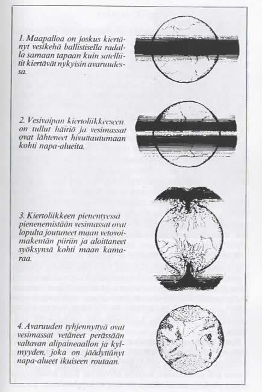
Водное кольцо.
- Когда-то водное кольцо вращалось вокруг Земли по баллистической траектории, точно так же, как это делают сегодня спутники в космосе.
- Произошло нарушение циркуляции водной мантии и водные массы начали дрейфовать в сторону полярных областей.
- По мере уменьшения циркуляции водные массы наконец попали в гравитационное поле Земли и начали своё стремительное падение к земной поверхности.
- Опустошая космос водные массы утощили за собой огромную волну низкого давления и холода, которая заморозила полярные регионы вечной мерзлотой.
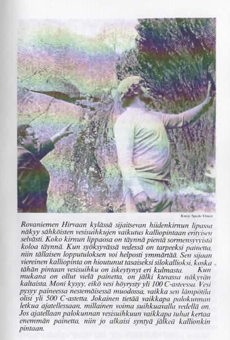
В козырьке выбоины, расположеной в деревне Хирва в Рованиеми, особенно чётко видно воздействие электрических струй воды на поверхность скалы. Вся верхняя часть выбоины полна маленьких дырочек глубиной в палец. Когда у стремительно падающей воды достаточное давление, такой конечный результат легко понять. Прилегающая же поверхность камня наоборот была отшлифована в гладкую скалу, потому что ударившая по этой поверхности струя воды била под другим углом. Многие спросят, не испаряется ли вода при температуре 100ºС. Вода может оставаться в жидком виде при повышенном давлении, даже при температуре более 500ºС. Каждый знает какой силой обладает водяная струя, для примера можно представить хотя бы пожарный шланг. Если предположить давление тысячикратно большее, чем у пожарного шланга, то в таком случае начали бы появляться следы на поверхности скалы.
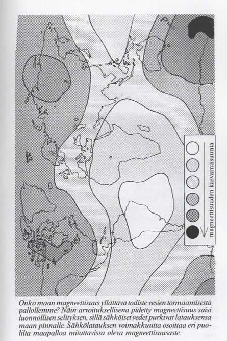
Магнетизм Земли.
Стрелка на рисунке указывает возрастающее направление магнетизма.
Является ли магнетизм удивительным доказательством того, что воды столкнулись с нашим шаром? Таким образом, магнетизм, считавшийся загадочным, имел бы естественное объяснение, поскольку электрические воды разряжали свой заряд на поверхность Земли. Измеренная в разных частях земного шара степень магнетизма указывает на силу электрического заряда.
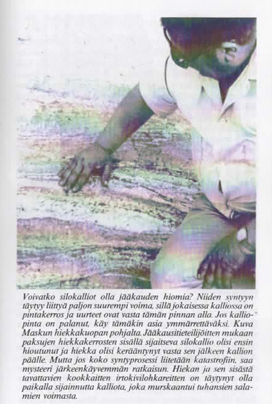
Могут ли гладкие скалы быть шлифовкой ледникового периода? Для их создания необходима гораздо большая сила, потому что каждая скала имеет поверхностный слой, а бороздки находятся только под этой поверхностью. Если поверхность камня обожжена, это тоже понятно. Фотография со дна песчаного карьера Маску. По мнению учёных ледникового периода находящаяся под толстым слоем песка скала была сначала отшлифована и только после этого песок накопился на её поверхности. Но если с катастрофой связан весь процесс рождения, загадка получает более разумное решение. Песок и большие валуны встречающиеся здесь должны были быть этой скалой, которая была раздавлена силой тысыч молний.
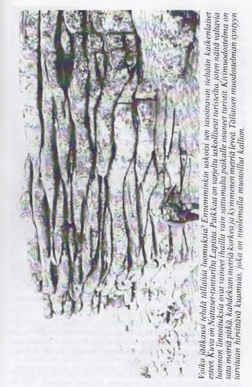
Может ли ледниковый период создать такие творения? Скорее, можно поверить, что он сгладит всевозможные препятствия на своём пути. Фотография сопки Наттасен в Лапландии. Место тщательно охраняется от туристов, поэтому любоваться этими огромными природными крепостями могут только случайно оказавшиеся там туристы. Скальное образование имеет сто метров в длину, восемь метров в высоту и девять метров в ширину. Для создания такого образования нужна ужасная жара, которая придала бы такую форму скале.
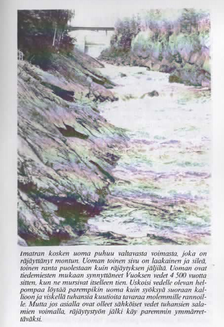
Русло порогов Иматры говорит об огромной силе, взорвавшей гору. Одна сторона русла реки плоская и гладкая, а другая напоминает последствия взрыва. По мнению учёных, русло было создано водами Вуоксы 4500 лет назад, когда они проломали себе дорогу. Проще поверить, что воде было бы легче найти более лучшее русло, чем нырнуть прямо в скалу и разбросать по обоим берегам тысячи кубов камня. Но если дело в электрических водах силой тысяч молний, последствия взрыва становятся более понятными.
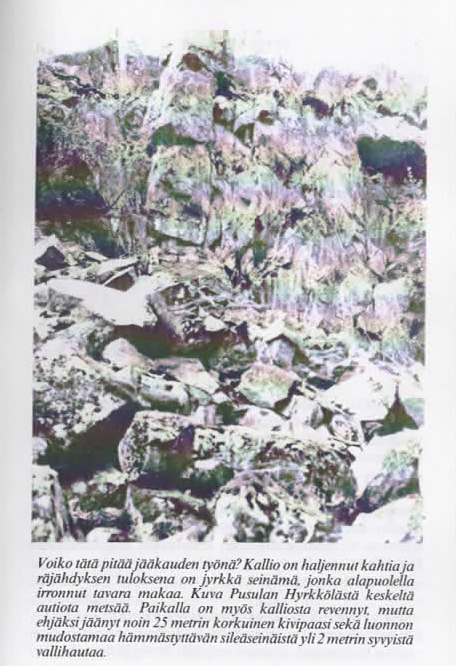
Можно ли это считать работой ледникового периода? Скала раскололась на двое, и в результате взрыва образовалась отвесная стена, под которой лежит оторванный материал. Фотография сделана в Хюрккёля в Пусула посреди неизведанного леса. Здесь же находится каменная плита высотой 25 метров, оторванная от скалы, но оставшаяся целой, а также удивительное природное образование с гладкими стенами более 2 метров глубиной ров.
8. Ледниковый период - научный затор
Мы познакомились со многими доказательствами того, что существование ледникового периода в прошлом определённо, является заблуждением учёных. Появившаяся более сотни лет назад научная гипотеза теперь превратилась в непреодалимую ледяную гору, с которой неизбежно должна столкнуться каждая новая догадка. Каждый новый исследователь хочет только оставить свой след на доске ледникового периода, внося лишь изменения в его хронологию. Мы же теперь близки к тому моменту, когда вся эта огромная ледяная гора рухнет из-за своей несостоятельности.
Читатель наверняка удивляется возрастной оценке доказательств, приведённых в этой книге. Возраст, выкопанных из-под земли деревьев, изменяется от 4 000 до 49 000 лет, возраст мамонтов оценивают от 10 000 до более 40 000 лет, установили, что оледенение моря Росса началось 6 000 лет назад. Учёные устанавливают возраст, найденных ими объектов на основе радиоуглеродного датирования. При помощи этого метода возможно определить возраст почти до 50 000 лет. Этот способ основывается на том, что после гибели организма в нем постепенно уменьшается содержание радиоактивного изотопа С-14. Если определить количество оставшегося углерода, то тогда можно высчитать возраст исследуемого объекта.
Тем не менее немногие учёные считают метод радиоуглеродного датирования надёжным. Если возьмём во внимание когда-то произошедшую катастрофу, то тогда вообще метод теряет доверие. Жар, посетивший Земной шар, перемешал всю природную систему. На разных территориях он был разным по своей величине. Его влияние привело к измениям количества составных частей, используемых в измерениях, из-за чего определение возраста произвольно варьируется.
Но, если мы хотим выяснить, когда же катастрофа произошла на земном шаре, мы можем искать указатели, кроме примеров из данной книги, также и из разных сфер науки. В качестве отправной точки возьмём пример оледенения Антарктиды. Как мы помним, при изучении морского дна выяснили, что оледенение Антарктиды началось только 6 000 лет назад. До этого она не была замороженой.
Современная историческая литература приняла доктрину из археологии и геологии, а также из биологии, которые вместе растягивают историю человечества от современного времени в прошлое на миллионы лет. Удивляясь, можем всё-таки спросить, почему история, опирающаяся на осязаемые доказательства, доходить только до примерно 3 000 лет до Р.Х., когда начинается время первой династии Египта? Почему основательных доводов и следов человеческой деятельности на земном шаре невозможно найти ранее чем примерно 5 000 лет назад в нашем летоисчислении, хотя человек, как утверждают, топтал земную поверхность миллион лет?
Нам всем известны странновыглядящии прародители человека и их названия такие как человек гейдельбергский, небрасский человек, пилтдаунский человек, пекинский человек, неандертальский человек, новогвинейский человек и кроманьонский человек. Создавая представление о наших обезьяноподобных праотцах, историки и археологи обосновываются на найденных черепах и в каких-то случаях только на обнаруженых зубах. На этом основании делают затем заключения о целых культурах и образе жизни.
Если в исторической литературе нельзя опираться на явные свидетельства ранее чем 5 000 лет назад, так почему нам рассказывают истории об обезьянах, связь которых с человеком являются спорной? Обстоятельство, что исследователи истории не продвинулись в глубь прошлого дальше чем на 5 000 лет, имеет логичное объяснение, какая-то катастрофа прервала этот путь, возможность для исследований. Такое событие почти уничтожило человечество и уцелевшим надо было начинать сначала. Возможно они принялись строить современный мир 6 000 лет назад и основали через 1 000 лет в Египте известный историкам государственный строй.
Согласно эволюционной теории Дарвина история говорит о постепенном развитии человека, которое произошло за время в сотни тысяч лет. Мы все знаем из уроков истории неандертальского пещерного человека, которого считаем первобытным охотником. В качестве соединения между неандертальским человеком и современным стоит кроманьонский человек, который обитал на земном шаре примерно 30 000 лет назад. Возможно ли сегодня определить какое отличие в умственных способностях было у неандертальского человека и кроманьонского человека? Можно ли установить ступени развития между кроманьонским человеком и современным? Знаменитый шведский историк Карл Гримберг так изобразил достижения кроманьонского человека в своей книге «История народов» 1966 г. (Carl Grimberg “Kansojen historia” 1966).
«Несравнимо интереснее являются всё же эти отличительные рисунки и изображения, которыми кроманьонские люди украшали потолки и стены своих пещер. Таких пещер найдено много в северной Испании и южной Франции. Последнюю находку обнаружили во время второй мировой войны. Возраст наскальных изображений, по радиоуглеродному датированию, от 10 000 лет до 32 000 лет, и они являются по-настоящему искусством высокого класса, так что их можно приравнять к самому лучшему, что человек когда-либо мог создать. Обычно изображения кроманьонских людей представляют диких зверей. В пещерах встречаешь красивые серии рисунков, многие из них животные, которые в ледниковый период странствовали по европейской степи и тундре. Лошади, зубры, дикие быки и коровы, мамонты, шерстистые носороги, северные олени, козы, лисы, медведи, птицы, все они нарисованы одинакого чётко и изящно. В изображениях использовано много красок: чёрный, красный, жёлтый, белый. Они могут сплошь покрывать потолок и стены пещер, и этих изображений может быть сотни рядом друг с друго, а порой также друг на друге. Только несколько раз изображён сам охотник, и тогда его представляют весьма стилизованно, но всё-таки так, что движения и положения тела передают удивительно точно. Человеческие фигуры довольно сильно напоминают современное искусство, которое также стремится достичь простого движения, а не формы.»
Кроманьонский человек способен создать искусство такого высокого уровня, что для того чтобы достигнуть того же, человечество ждало десятки тысяч лет. В таком случае нужно говорить о том, что современный человек находится на более низком уровне от своих прародителей. Надо ли, в таком случае, признать, что в этапе развития не может быть различия? Может быть лучше предположить, что наши прародители были на уровне, которого мы достигли только в последнее время, если достигли. В истории с кроманьонским человеком мы опять сталкиваемся с препятствием - ледниковый период. Полуголые дикари создают искусство высокого уровня и охотятся на замершей территории тундры на тропических животных. В таких условиях жизни возможности обеспечения своего существования как у человека так и у животных были бы минимальными, не говоря уже о том, чтобы оставалось ещё время на увлечение живописью. Стоит также спросить о том, почему рисунки кроманьонского человека ничего не говорят о льде и холоде? Людям нужно было тратить много сил на то, чтобы защитить себя от их воздействия.
Ледниковый период на протяжении более ста лет был затором для многих сфер науки, который уже пришло время устранить с дороги прошлого человечества. Только в таком случае туманное прошлое наших прародителей может проясниться, если мы будем искать его объяснения в другом месте. Место зарождения человечества разыскивалось на протяжении сотен лет, но в своих исследованиях учёные не продвинулись далеко. При условии, что в исследовании истории нельзя продвинуться дальше чем на 5 000 лет назад, напрасно представлять человечеству сказки о более ранних периодах времени. Так как мы знаем, что навстречу безнадёжно встанет катастрофа, мы понимаем также, почему не возможно далеко продвинуться в нашем прошлом. Но в свете истории мы получили одну зацепку - время, в которое произошла катастрофа.
Сегодня удивляются огромному демографическому взрыву, который испытал земной шар. Численность населения нашей планеты превысила уже отметку в 4 миллиарда и прогнозируют, что прибавление людей в дальнейшем только ускорится. Но как такой демографический взрыв может быть именно в наше время? Его зарождение должно быть найденно.
Мы можем произвести расчёт о росте населения Земли предположив, что катастрофа произошла примерно 6 000 лет назад. Это согласуется с историческими источниками, которые могут приоткрыть шторы человечества на 5 000 лет назад. С другой стороны мы помним об исследованиях, сделанных на море Росса, которые указали, что его оледенение началось только 6 000 лет назад. Также находки деревьев обозначили произошедшую катастрофу в периоде 5 000 — 6 000 лет назад.
Развитие численности населения нашей планеты известно со времени новейшей истории довольно точно. Временем современного демографического взрыва считается 1700 год, когда прибавление большого числа населения получило свое начало. После этого прибавление численности населения земного шара показывает довольно устойчивое последовательное развитие. Из исторических источников мы знаем, что во времена рождения Иисуса или по нашему летоисчислению в нулевой год на Земле было примерно 160 миллионов жителей. К 1700 году это число увеличилось до более 600 миллионов людей.
Предположим, что численность населения удваевается каждые 400 лет, и тогда начиная счить от нулевого года к 4 000 лет назад мы получим численность человечества в 150 000. Этот простой расчёт показывает, что человечество не может своими корнями уходить в даль времён на десятки тысяч лет.
Если неандертальский человек или кроманьонский человек топтали поверхность нашей планеты более чем 30 000 лет назад, у них были бы десятки тысяч лет времени для того, чтобы размножаться и демографический взрыв произошёл бы раньше. Если они жили в то время, то тогда они погибли в той катастрофе до последнего человека, потому что следы жителей этого периода не найдены нигде больше как только под землёй. Так как демографический взрыв человечества сложился только за время более чем 5 000 лет, между предполагаемым кроманьонским человеком и современным должна быть катастрофа, благодаря которой развитие получило новое начало.
Учебники разделяют развитие населения земного шара на три части. Первый этап охватывает по математическому расчёту более 8 000 лет прошлого, о которых математические кривые не могут много чего рассказать. Хотя и могли бы, потому что численность человечества обнуляется по математическиму закону. Когда большая часть времени не доступна, кроме нескольких черепов или зубов, тогда результаты должны быть замаскированны арифметической операцией или погребены под огромными ледяными массами. Математические кривые также указывают на то, что точка отсчёта где-то должна быть, и эту отправную точку нельзя отсрочить на десятки тысяч, не говоря уже на миллионы лет назад.
Придерживаясь этой датировки можно понять историю населения всего земного шара. Историки поместили первоначальное поселение финнов за Урал, где они жили на протяжении многих тысячь лет. Но что если Финляндия была пригодной для проживания уже 7 000 лет назад, т. к. по ледниковой теории последний кристалл льда уже расстаял, тогда почему наша история заселения Финляндии началась только 2 000 лет назад со времён рождения Христа. Просто потому, что на Земле 6 000 лет назад не было людей, которые могли бы заселить нашу красивую родину. Нужно было время для того, чтобы народы и племена начали увеличиваться в численности и отправились распространяться по земному шару. Вот поэтому прошло 4 000 лет прежде чем началось заселение Финляндии.
Современная технология приносит нам каждый день удивительные перспективы, о которых несколько лет назад никто даже не мог и мечтать. Наука решает всё более новые и новые проблемы, которые десятилетиями считались никогда не разрешимыми. Сегодня верят, что в 2 000 году у человечества будут в использовании такие способности, с которыми сегодня мы можем познакомиться только на строницах фантастического романа, например, что человек уже в ближайшем будущем будет способен выращивать органы биологическим способом, наследственные особенности смогут изменять в более благоприятном направлении, умственные способности возможно будет улучшить при помощи лекарств, будет осуществимо прямое электромеханическое соединение между человеческим мозгом и компьютером, животных смогут улучшить для выполнения простых заданий. Верят даже, что в будущем будут способны управлять силой тяжести.
Сегодня взор науки обращен в космос, где верят, что можно найти условия пригодные для жизни и для будущего всё увеличивающегося человечества. Знание и умение о покорении космоса увеличиваются день ото дня, решающее открытие по преодолению длинных дистанций в какой-то день может оказаться очень важным.
В то время как одна голова науки болеет космосом, другая пытается объяснить ледяные горы в миллионы тонн весом. Представление о прошлом человечества всё ещё продолжает находиться в процессе изменения, т. к. на поверхность выносятся новые ранее засекреченные находки. Пузырь миллиона лет развития безнадёжно лопается, благодаря истине о происхождении человечества, которую раскапывают из недр земли.
Так на территории современной Сирии в 1975 году нашли в старинном городе Эбла 5 000 глиняных дощечек. Предполагается, что это библиотека. Дощечки очень хорошо сохранились. Опять в мгновение мифическое государство превратилось в реальность, т. к. до этого Эбла считалась сказкой, о которой есть только несколько упоминаний в исторических произведениях Геродота.
Глиняные дощечки Эблы изменили написание истории, там в библиотеке обнаружили много торговых и политических договоров, которые рассказывают о мире примерно 2 500 — 3 000 до Р.Х. Современные исторические книги необходимо изменить, потому что они рассказывают, что в то время преобладали только два больших государства, Египет и Месопотамия. Считается, что государство Ебла было совершенно равным этим сверхдержавам и имело примерно 300 000 жителей.
Глиняные дощечки Эблы ведут к катастрофе человеческой истории. В то же время, по мнению исследователей, они подтверждают историческую ценность Библии. Теория катастрофы может получить своё подтверждение и с этой стороны, когда у человечества имеется в доступности сравнительный источник информации наряду с Библией.
Хотя глиняные дощечки Эблы уже изменяют наше представление о прошлом истории, археологи не верят, что на этом всё закончится. Они считают, что ещё много библиотек скрыто в недрах земли и даже несколько таких как ранее упомянутая библиотека Эблы. Завершится ли эпоха «миллионов лет», когда истолкуют эти дощечки и их факты поставят в правильном порядке? Так изменится мир…
В этой книге представлен материал, где очень точно определено датирование катастрофы произошедшей на Земле, а также показаны факты говорящие, что в науке много неясностей, которые необходимо исправить. Современной науки доступны суперэффективные методы и больше информации чем когда-либо было в истории человечества. Если этими методами воспользоваться правильно, то для прояснения истины не надо ничего другого, как желания её обнажить.
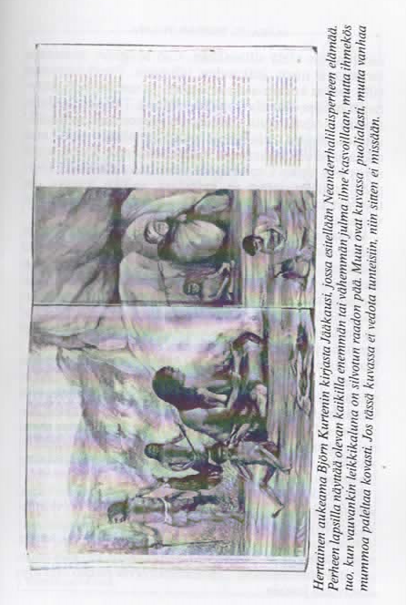
Трогательное начало книги Бьёрна Куртена «Ледниковый период», в которой рассказывается о жизни семьи неандертальцев. У всех детей семьи в большей или меньшей степени жестокое выражение лица, но странно ещё то, как выглядит игрушка малыша — голова изуродованной туши. На фотографии почти все полуголые, кроме старой бабунки, которая сильно мёрзнет. Если уж эта картина не вызывает эмоций, то тогда, наверное, и ничто другое.
Математический график показывает рост населения. Отправная точка фактической демографической бомбы датируется примерно 1700 годом, когда население нашей планеты начало стремительно расти. Как видно на графике, до этого момента рост населения был довольно стабильный. Даже математический расчёт демонстрирует, что возвращаясь назад в историю человечества, автоматически натыкаешься на нулевую точку, с которой должен был начаться рост населения. Десятками тысячами лет прошлого невозможено скрыть такой начальный момент, как ни старайся.
Подобными древними монстрами нас пугают в школах на протяжении уже ста лет. И, похоже, этим убеждениям нет конца, потому что в наши дни понастоящему соревнуются за то, кто сможет нарисовать более страшного монстра жившего миллионы лет назад. Ведётся оживлённая дискуссия о том, были ли у монстров один или два рога, но никто не хочет говорить о самом деле.
Статья из газеты «Суомен Кувалехти» 51-52, 22.12.1981
Глиняные таблички Эбла обновили древнюю историю Ближнего Востока.
Среди наиболее важных археологических открытий 20-го века — обходя Кносс на Крите, многочисленные гробницы Тутанхамона в Египте, свитки Мёртвого моря в Израиле — вскоре может возвыситься имя Эбла. Ещё десять лет назад Эбла спала забытой под покрывалом почвы в северо-восточной Сирии. 2500 г. до н. э. Эбла была городом с населением 30 000 жителей, центром огромной империи и самым оживлённым центром на Ближнем Востоке. Эбла также имела свою клинопись. Сохранность архива записей на глиняных табличках изменит древнюю историю Ближнего Востока.
Как бы много знали мы об истории древних государств, если бы уже пять тысяч лет назад была известна бумага, на которой новоизобретённой клинописью были записаны события того времени. Текста было бы, возможно, много, но сохранился бы он одинаково хорошо как на глиняных табличках. При пожаре королевской библиотеки Эблы, глиняные таблички не рассыпались, а обжарились для ещё лучшей сохранности. Почти три тысячи лет спустя мудрость записанная на бумаге поднялась искрами в небо из охваченной пламенем Александрийской библиотеки.
Пожар в Александрийской билеотеке, вероятно сталпричиной того, что глиняные таблички были забыты на века. Последние глиняные таблички, появившейся примерно в 3000 г. до н. э. клинописи, относятся примерно к 50 г. н. э. После этого весь этот фонд исторической писменности остался существовать только как упоминание в труде Геродота.
В 1621 г. итальянец Пиетро дела Валле отправил письмо из руин Персеполя, в котором впервые европейцам было рассказано о глиняных табличках и письменных знаках, похожих на письмо. Однако прошло ещё 150 лет, прежде чем была начата интерпритация клинописных надписей. Большая часть проблем была решена к концу XIX века, но часть работ продолжатся до сих пор.
Аналогичным способом продолжается поиск городов, о которых повествуют глиняные таблички. К новейшим и недавно проведённым раскопкам Эблы относятся, например, Шубат Энлиль, город, история которого насчитывает почти семь тысяч лет, и который около четырёх тысяч лет назад царь Шамши-Адад сделал своей столицей расширевшейся Ассирийской империи.
Открытие глиняных табличек Эблы изменят историю древних загадок человечества. Учёные настороженно относятся к таким открытиям, так как они «опрокидывают многие стулья».
Приложение

Карты расположения, опустошённых выбоин Кейо Парккуненом.
Выбоина Драгсфьярта
Выбоина Каттилуото в Рюмяттюля
Библейская хронология (Анно Мунди — лат. в год мира / от сотворения мира)
Стохотворение.
Катастрофа 1656 года мира (Анно Мунди)
Потоп. Пекка Сувитие.
Статья из газеты «Илта. Саномат» 13.02.1997г.
Спеде подкапывает основание теории ледникового периода.
Ледниковая выбоина из Яласъярви возбуждает страсти.
В Яласъярви опустошают большую ледниковую выбоину. Раскопки достигли 12 метров от скальной поверхности, но продвижение в глубь продолжается.
«Спеде» Пертти Пасанен один из спонсоров раскопки ледниковой выбоины. Он вложил свои деньги «по чисто научным причинам». Пасанен пожелал профинансировать раскопки будучи вдохновлённым Кейо Парккуненом. Парккунен объявил себе тем, кто снесёт ледниковый период. Он написал об этом книгу «Ошибочный шаг сотни лет».
- У Парккунена есть совершенно прекрасные и разумные теории. Теория ледникового периода геологии настолько нелепа и инфантильна, что с ней надо что-то делать, - смеётся Спеде.
Пасанен не впервые сотрудничает с Парккуненым. Десять лет назад они сняли телевизионный документальный фильм, целью которого было расследование теорий Парккунена. После того как о намерениях Спеде стало известно СМИ тогдашний генеральный директор Геологического отдела иследований позвонил ответсвенному за программы на МТВ и запретил выход передачи в эфир. Фильм отложили на полку.
- И такое может случиться в наши дни! Ныне покойный гинеральный директор тогда ссылался на то, что наш документ мешает их расследованиям. Должна же быть свобода выдвигать разные теории, - вздыхает Спеде.
Представление Парккунена о теории ледникового периода вполе ясно.
- Дрянь, - восклицает Парккунен.
По данным геологических исследований, выбоины возникли благодаря талым массам вод ледникового периода. Текущая вода заставляла камни тереться о скалу, в результате чего образовалось углубление.
- Учат вопреки законам физики, что потоки воды и камни образовали двенадцатиметровые углубления в граните, - добавляет Парккунен.
Всем, кому интересно, Парккунен рекомендует мойку высокого давления и пластиковую бочку, с помощью которых можно заметить, что камни не удерживаются по бокам, а падают на середину.
- Очень согрело сердце, когда также Спеде сказал в Илкка, что Парккунена действительно надо слушать, он верит в своё дело как баран в свои рога, - шутит Парккунен.
/К статье прикреплена фотография Пертти Пасанена - финского комика и актёра, известного под именем Спеде. /
Спеде воодушивился финансировать раскопки, потому что «теория ледникового периода является настолько смешной».
Статья Юкка Паакки «Изнаночная сторона академической культуры».
Автор — доцент кафедры компьютерных наук Хельсинского университета.
В последнее время высшие школы оказались под сильным внешним и внутреннем давлением, требующим перемен. К ним не зря были предъявлены требования эффективности и результативности. Однако в академической культуре существуют глубоко укоренившиеся особенности, которые, к сожалению, делают проведение реформ действительно сложным.
Университеты являются экпертными организациями. Исследователи знают свою специальность как свои пять пальцев, а также осознают своё превосходство. В академическом мире не принято подвергать сомнению экспертные знания, поэтому из-за отсутствия внешних контактов исследователи становятся скорее экспертными идиотами, а со временем — всезнающими универсалами, которые во всём правы и готовы дать совет любому.
Исследовательское сообщество представляет собой соперническую группу. Это происходит потому, что значительная часть сотрудников конкурируют друг с другом за открывающиеся должности. Это явление наблюдается и широкой общественностью, когда в средствах массовой информации обсуждались связанные с заполнением должностей разногласия или научные споры психолого-социологов, а также философов. Взлетающий карьерный рост коллеги сопровождается не поощрениями, а завистью и жалобыми, поэтому о хороших человеческих отношениях и сплочённости мечтать не стоит.
Научная деятельность фактически делит сотрудников на две касты: исследовательскую элиту, которая курирует преподавание и управление, и низший класс, чья исследовательская работа бесполезна.
Университеты имеют свободу проводить научные исследования и предоставлять на их основе высшее образование. Эта автономия означает, что каждый преподаватель и исследовватель имеет полное право решать, как выполнять свои задачи.
С точки зрения отдельного человека принцип, конечно, приятный, потому что другим не приходится совать свой нос в методы работы и направления исследований. В худшем случае каждый научный сотрудник отдела работает самостоятельно, а это означает, что более широкая инфраструктура необходимая для исследовательских проектов или дальнейшего образования, не может быть созданна.
Университеты являются рабочими сообществами худшими из возможных.
Индивидуальная академическая свобода также является основной причиной того, что университеты или их кафедры не имеют общей стратегии работы или общих целей для всего коллектива, а лишь набор эгоистических устремлений.
Качественное руководство чуждо академической культуре. Частные и свободные эксперты вообще не соглашаются на надзор, и организация не предложила для этого хотя бы каких-то средств.
Задачи управления недооцениваются. Конкретным свидетельством этого является то, что ими нагружают поверх «обычных» служебных обязанностей. Карьерный рост тех, кого гонят на руководящие должности становится затруднительным, показатели эффективности затихают, в то время как администрация тратит время на единственно значимое исследование. Не удивительно, что во многих учреждениях испытывают трудности с обязанностями руководства. Бессмысленно пытаться внедрить в такую культуру управление результативностью или модный мягкий коучинг.
Поскольку вмешательство в личную академическую свободу не допускается, результаты работы особо не оцениваются и также не возможно оставить никаких отзывов. Отсутствие конструктивной критики, в часности, препятствует устойчивому развитию преподавания, а отсутствие положительных отзывов подрывает трудовую мораль: зачем стараться изо всех сил, если, как кажется, ничего не имеет значение. Как трудовое общество университеты действительно являются самыми узкими и подходят лишь для интровертов, идущих своим путём.
Отсутствие оценки и контроля в академической культуре косвенно допускает злоупотребления. Ранее горячие общественные дебаты о ленивых профессорах утихли, но теперь на передний план вышла новая тёмная академическая сторона — лихие дополнительные доходы профессоров. Один из краеугольных камней высшего образования и науки, академическая свобода, допускает не только получение новых научных результатов, но, как ни парадоксально, и халатность в официальном управлении, и явные официальные ошибки. Несомненно, по мере ужесточения надзора и уменьшения свободы таких случаев будет расскрываться всё больше и больше.
В университетах сосредоточены все основные дисциплины, поэтому можно было бы предложить, что мультидисциплинарность будет процветать. Это ни в коем случае не так, но разные науки изолированы друг от друга физическим рассредоточением, административными границами факультетов и подразделениями научных парадигм. Учителя и исследователи живут изолировано в своих ловушках и привязанные к своим научным субкультурам.
В результате многовековой изоляции исследователи из разных областей даже больше не понимают языка друг друга, поэтому научное сотрудничество быстро оказывается невозможным, если кто-то совершит ошибку, попробовав его, несмотря ни на что.
Юкка Паакки
Удивительная тайна Чёртого гнезда.
Загляните в самую большую «ледниковую выбоину» Европы.
Загадочный пейзаж Исовуори, расположенный в Юливалли, Йаласъярви, очаровывал людей на протяжении десятилетий. Чёртого гнездо - углубление 14 метров в диаметре и 23 метра глубиной, поражает воображение. Крупнейшая в Европе ледниковая выбоина соблазняет вас заглянуть глубже в земную поверхность.
Особый ландшафт Исовуори является ценным для изучения. Те, кто не боится высоты, могут осмотреть местность с 21-метровой смотровой башни. Гладкие скалы украшены приземистыми соснами и валунами.
Грусная история пастушьей сосны заставит вас на долго задуматься. Пещера Колли-Крятари — хорошее место, чтобы попробовать на сколько возможна жизнь в каменной пещере. С природой края можно ближе познакомиться на природных тропах в один и четыре километра.
Вверх по лестнице в глубину логова.
По среди деревьев виднеется мистическое Чёртово гнездо. Его секреты легко раскрыть. Прочная железная лестница ведёт в логово, лежащее на глубине 23 метра.
На дне прохладно даже в жаркие дни. Крутые каменные стены тянуться к солнцу. Звуки воды, капающей со стен, отражаются от стен.
Зимой 1997 года этот район снова начали исследовать благодаря Кейо Парккунену из г. Турку и сельскому комитету Юливалли. Из полости выбоины был удалён рыхлый каменный материал, называемый гравием. Финансистами выступили покойный Пертти «Спеде» Пасанен и муниципалитет Йаласъярви.
Пертти Пасанен арендовал территорию у владельца до 2027 года. Весной этого года право аренды перешло к Молодёжному клубу Юливалли.
Надпись под фотографией: Взгляд с высоты в глубь земли. С высокой смотровой башни Исовуори можно увидеть дно выбоины диаметром 14 метров и глубиной 23 метра. Фото: Рейо Лехтоваара.
Кейо Парккунен известен своими оригинальными идеями, с помощью которых он доказывает, что ледниковый период и эволюционное развитие, происходившее на протяжении миллионов лет, являются научной иллюзией. Парккунен посвятил 15 лет своей жизни исследованию загадочных событий и выявлению противоречий в теории ледникового периода. Парккунен привлёк внимание всей нации, когда он бросил вызов священной корове науки, ворвавшись на огромное каменное поле, расположенное в г. Турку, которое археологи считают морским побережьем ледникового периода. Его оштрафовали за исследования, которые он намеревался провести с помощью экскаватора, но это не помешало ему продолжить работу в других местах. Парккунен нашёл нетронутую выбоину на архипелаге г. Турку. Камни, которые были подняты из этой выбоины, подтверждали гипотезу Парккунена. Вот тут и начали раскрываться тайны…
Мысли Кейо Парккунена время от времени вызывали оживлённую дискуссию в прессе. В этой работе Парккунен впервые получил возможность представить свои мысли полностью без цензуры. Конечным результатом появилась эта работа, которая разбирает ошибки, допущенные наукой за последние сто лет. Кейо Парккунен глубоко проникает в противоречивые объяснения учёных удивляя, смеясь, поражая и в то же время серьёзным образом. Парккунен открывает нам глаза, чтобы увидеть многое, о чём даже не задумываются занятые современные люди. Научный труд Кейо Парккунена написан так, чтобы быть понятным обычному человеку без миллионов лет объяснений.